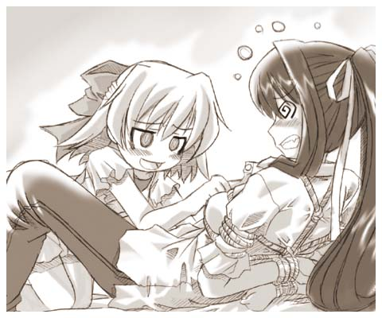
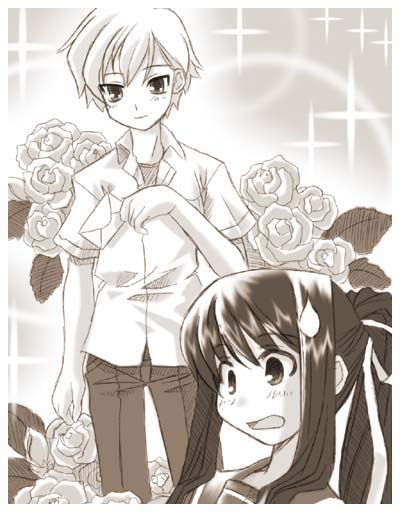
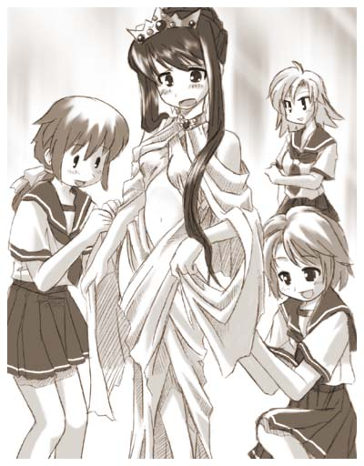
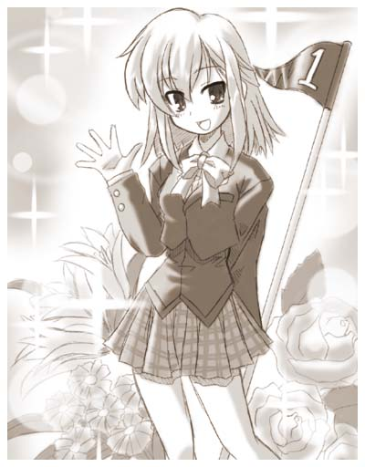
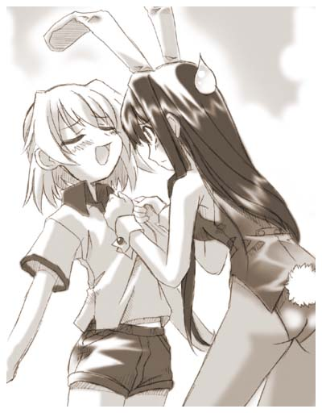
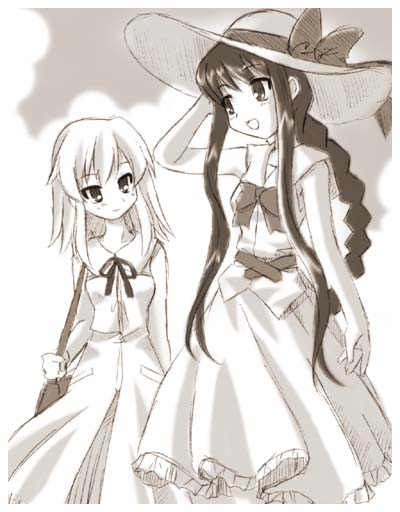
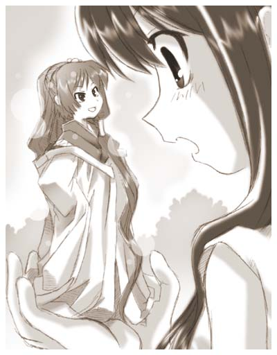
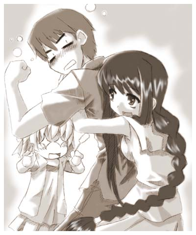
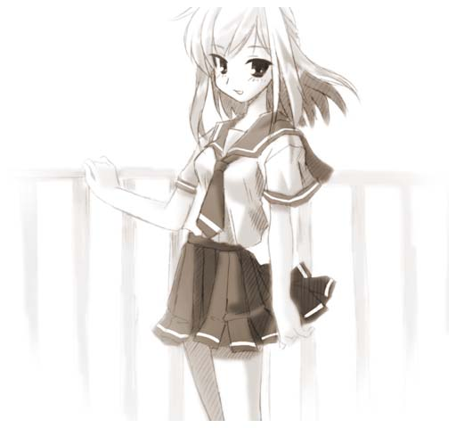

戻る
よりしろトランス
作：乾
■登場人物紹介

佐倉 伊織（さくら いおり）
神様が依り付いてしまった為に女になってしまった一応不幸な主人公。
本人は文句を言いつつもしばらくの間女として生活する事には納得している。
最近はやっと女性の体にも慣れてきた模様。

天城 裕香（あまぎ ゆうか）
伊織の幼馴染。トラブルメーカーであちこちから厄介ごとを持ってくる。
しかし、その行動力と顔の広さは侮れない。人を縛る技術は神業。

沖田 誠二（おきた せいじ）
伊織の幼馴染。悪人顔だが一番の常識人、溜め込んだ雑学で色々助言をしてくれる。
伊織からの信頼も厚い。最近は伊織からのセクハラにドギマギする役割が多い。

巳嶋 小夜（みしま さよ）
安曇神社の神主の娘。伊織に取り付いた神「あずさ様」と面識がある。
レギュラーな筈なのに影が薄いし今回も出番なし。

佐倉 香苗（さくら かなえ）
伊織の母。突然息子が女になってもまったく動揺せず、おもちゃにするＴＳ物特有の母親。
現在着々と息子を娘に改造中。もはや止められる者は誰もいない。

あずさ様（あずささま）
今回の騒動の元凶。伊織を女性にした張本人。
尊大なしゃべり方と悪役っぽい笑い方が特徴の茶目っ気ある神様。
「——————と言うわけなんだ」
あずさ様の世界から帰ってきた日の放課後。
俺は誠二と裕香を自宅に呼んで事の顛末を話していた。
とは言ってもさすがに俺が一度死んでいるとかすべてを話す訳にはいかないからな。
なんとかその辺は上手くぼかして誤魔化して話した——————と思う。
「ふーん。今は神様みたいな感じになっているけど、社が完成すればまた元に戻れるって事？」
「うん」
俺の返事を聞いて優香は意味ありげに誠二に目配せをする。
それに対して誠二は肩をすくめて返した。
アレ、なんだか疑われてる？
「で、本当にそれだけ？」
ずいと優香が俺に詰め寄って来る。
距離的にはキスが出来るほど近いが雰囲気はとてもそんな感じじゃない。
「そ・・・・・・それだけだよ」
「ふーん、他に何か隠してるでしょ？」
「い、いや。別に・・・・・・」
「そう」
と言った後優香はその後、突然俺の予想外の行動に出た。
おもむろに優香はそのまま顔を寄せて唇を重ねてきたのだ。
「む、むぐ———！！」
突然の出来事に目を白黒させる俺。
そして優香は冷静にその隙をついて自由な手で俺の腕を器用に縛り上げる。まさに匠の技、流れるような手さばきだった。
まあ感心している場合じゃないんだけどね。
実を言うと女の子の唇って柔らかくてなんとも気持ち良くてさ、だから抵抗も必然的に弱くなっちゃっうんだよね。
で、俺がそんな恍惚感から解放されたにはもはや時すでに遅し。
完全に身動きが取れない様がんじがらめに縛られていた。
いつもの通り縛り方は凄くやらしい。
いったい何処でこんな縛り方を教わってくるんだろうか。
事が終了してからようやく優香が口を離した。
少し頬を紅くした優香が妖しい笑みを浮かべている。
「ぷはっ。ななななな・・・・・・なんて事をするんだよ！？」
あまりの出来事に激しくどもってしまう俺に対し裕香の反応はそっけなかった。
「ふふっ 今の伊織を縛るのはちょっと骨だからね。意表をつこうと思って」
「いくら意表をつく為だからってお前なあ・・・・・・」
「別に初めてって訳じゃないんだからいいでしょこのくらい」
弱々しく抗議する俺にまったく悪びれた感じもなく優香が言う。
確かに初めてじゃない、俺と誠二は以前にもこうして何回か裕香には唇を奪われている。
奪った訳ではないのが男としては悲しい所だが。
「それよりもー。さあ、すべて話してもらうよ」
「えっと何をかな？」
あからさまに惚けてみる俺。
このままあっさり白状するのもなんだか釈然としないからな。
「まだ知らばっくれるの。いい？ 伊織。すべて包み隠さずに話さないと緊縛絶頂地獄の刑だよ・・・・・・うふふ」
「何だよ、そのＡＶみたいなタイトルはっ！」
うわっ とたんに裕香の目つきが怪しくなってきた。
やばい、このままだと本当に緊縛絶頂地獄の刑とかをやりかねん。
そこで俺は違うところに救援を求める事にした。
「誠二助けてくれー」
いままで部屋の隅で傍観していた誠二に助けを求める。
「ふむ」
何故か誠二は真剣に考える振りをしてからこう答えた。
「残念だが伊織。お前を助ける事は出来ない」
大げさに首を左右に振る誠二。
「そんなあ〜」
「すべてを白状する事だ、そんなに難しい事じゃないだろう？」
肩を竦めてあっさりとした口調で誠二はい言う。
なんてことだ、誠二まで俺の尋問に加わってきやがった。
四面楚歌、絶体絶命の窮地だ。
「さあ、伊織。私がボタンをすべて外す前に白状しなさ〜い。全部外しちゃったら大変な事になるよ〜」

そう言うと俺の裕香はブラウスの一番上のボタンに手をかける。
なんだかとってもやばそうな雰囲気だ。
「ひとーつ」
優香が艶かしい手つきでプツリとブラウスのボタンを外す。
「わ、判ったすべて白状するからっ」
すぐに観念した俺はすぐさま降参した。
しかし優香は手を止めるそぶりがまったくない。
「ふたーつ」
優香はゆっくりと焦らす様ないやらしい手つきで一つ下のボタンを外す。
なんなんだよこの妖しい空気は〜。
「話すって言ってるだろ。その手を止めろよっ！」
「あ〜？ 聞こえないな〜。みぃ〜つ」
お前はどっかの獄長か！？
裕香は完全にスイッチが入ってしまった様で俺の事はお構いなしに四つ目のボタンに手を掛けている。
ひえ〜 このままではホントに絶頂地獄にされてしまう。
「うわ〜ん、誠二〜。全部話すから助けてくれ〜！」
もはやほとんど泣き声だ。せっぱつまった俺は情けない声で誠二に助けを求めた。
「判った」
そう言うと誠二は立ち上がって裕香の襟首をつかみひょいと猫の様に持ち上げる。
「う〜、良いとこだったのに邪魔しないでよ」
持ち上げられた優香が恨めしそうに誠二に抗議する。
「お楽しみの所すまんが、目的が摩り替わってしまっているぞ」
「ん。 あ、そうっだった？」
こいつ本気で忘れてやがったのか？ 冗談だと信じたい。
「まあいいや、それじゃあすべて話してもらおうかな」
「はあ・・・・・・」
こうして俺は縛られたまま、あずさ様から聞いた事をすべて白状することとなった。
こんなことなら始めから正直にすべて話してしまえば良かった。
第四話
初夏の気持ちの良い朝日の下、寝不足でだるいからだを引きずりつつ校門を潜る。
もちろん潜ると同時に欠伸をするのは忘れない・・・っていうか出ちゃうんだけどね。
体育祭が近い所為か他の生徒は活気づいている様で、部活の朝練の他に自主的にトレーニングをしている生徒もいる。
学校行事に積極的ではない俺には信じられない話だ。
あのあずさ様の衝撃の告白から半月ほどが経っていた。誠二と裕香に本当の事を話すのは躊躇われたのでうまく誤魔化そうとしたら。
裕香の猛攻をうけ撃沈。すべて白状する羽目になってしまった。
すべて話し終わったあと裕香に縄を解いてもらうのも一苦労だった。
まったくいい加減人を縛るのは勘弁してもらいたいものだ。
そんな裕香に対しての切実な要望を考えながらいつもの様に昇降口に入り下駄箱を開ける。
「ん？」
中には最近新調した上履きの上に見慣れぬ物が乗っかっていた。
白い長方形の紙で出来た袋の中につらつらと筆者の想いをしたためた紙が綺麗に折りたたんで入っている物である。
こ、これは・・・！ もしかして伝説に聞くあれかっ ラブレターってやつか！？
もちろん俺は生まれてこの方ラブレターなんて物をもらった事なんかは一度もない。
この始めての感動する出来事にさっきまでの眠気はどこへやら、すぐさま人目につかない物陰を見つけると、そこに隠れて中身と差出人を確認する事にした。
「むむむ・・・・・・・」
うわーん、確認しなければ良かった———。
手紙は確かにラブレターでした。
でも差出人は男でした・・・。
そうか〜、今のこのなりを考えればそういう事もあるか・・・。
がっくりと肩を落とす俺。
先ほどまで鐘を鳴らすような胸の高鳴りは消え、意気消沈した俺はその手紙を鞄にしまい教室への道のりをトボトボと重い足取りですすんだ。
教室は開催が近くなった体育祭の準備などで生徒達が浮き足立っていて騒がしい。
おれ自身はあんまり積極的に参加するタイプではないのでそういうのにはほとんど参加していない。
最低限の協力はしてるけどね。
俺が自分の席に座り、読み終わった問題の手紙を眺めながら悩んでいると、いつもの様に優香がやってくる。
「はよー、伊織。あれ、何やってんの？」
「おっす。いやな、下駄箱に手紙が入っていてな・・・・・・」
「手紙〜？ はっ！！ もしかしてラブレター！？」
俺の予想以上に驚き俺に頭突きをしそうな勢いで詰め寄って来る裕香。
「ああ、そうだよ。今どうしようか悩んでいた所だ」
「だっ誰からよ！？」
必要以上に顔を近づけて聞く裕香。何をそんなに動揺してるんだか・・・。
「あー、３年の時坂って先輩だな」
「時坂？ うーん、そんな人三年にいたかな・・・・・・フルネームは？」
裕香は眉間にし皺を寄せて自分のデータバンクを検索している。
って言うか三年生の名前全員把握していたりするんじゃなかろうな。
「ええっと ３−Ａ 時坂 秀和 だって」
「秀和って・・・・・・。男から！？」
すぐさま俺に突っ込みを入れる裕香。
良く朝からこんなにハイテンションな突っ込みを入れられるもんだ。
「ああ、裕香も女からだと思ったか？」
「まあ、そりゃあね。——————ん？ まって、男で時坂って聞いた事あるような・・・・・・」
「なんだ有名人なのか？」
俺はまったく聞いた事がないぞ。
まあ、まだこの学校に入って数ヶ月なんだから、有名な人なんて知るわけもないんだが・・・。
「ああ、そうそう思い出した。確かテニス部で凄く女子に人気がある先輩だよ」
「はー、そうなんだ」
なんだ、モテ男なのか。なんだか断るのを少し申し訳なく思って損した気分だよ。
「でもね結構な人数から告白されているのにＯＫした事一度もないんだって」
なんと、モテモテになるとそんなに余裕があるものなのかね、うらやましい事で。
「あのね、あんた解かってんの？」
俺の冷めた反応を見た優香はあきれた様に嘆息しながら俺に言う。
「何が？」
「あーもう。今まで誰も落とした事がない憧れの王子様が告白してきたって事なんだよ。これって凄い事じゃない？」
「そう言われてもなあ、相手が男な以上断るつもりだし」
「まあ、それはそうだろうけどさ。なんか勿体無い様な・・・・・・」
なんだか複雑な表情を見せる裕香。
いったいなんだと言うのだ。
「なんだ、裕香は俺が時坂先輩と付き合ったほうがいいのか？」
「それはイヤ」
俺の言葉に少し被る勢いで即答する裕香。嫌なら言わなければ良いのに。
「いったいなんなんだよ」
「う、うーん。なんか面白い方向に転がらないかなーと思って」
「やめとけよ。色恋沙汰で遊ぶのは良くない」
「はーい。伊織ってそう言う所厳しいよね」
「普通だよ、普通」
「そういえばさ、女の子だったら付き合ってた？」
「え？ うーん、どうかなぁ・・・・・・。今の俺の容姿を見て付き合いたいって思う子だったら断るかもなあ」
この容姿は本当の姿じゃない、数ヶ月もすれば以前の冴えない男子生徒に戻る。
だから、容姿を気に入ってくれた子には悪いけど、きっぱりあきらめてもらった方が良い筈だ。
とは言え俺も健康な男子な訳だし誘惑に勝てない事もあるかも・・・・・・いや、今は男子じゃないが。
「相変わらず真面目だねぇ〜。まあ、私はいおりんのそう言う所が好きなんだけどね」
「そりゃ、どうも」
「う〜いおりん、そっけない〜」
「そうでもないぞ」
そんなこんなで裕香としゃべりながら読み終わった手紙を封筒に入れ、早速一時間目の休み時間に返しに行く事にする。
三年生の教室は３階にあるから登るのが偉く面倒くさい。
３年Ａ組は端の方にあるのですぐに見つかった。
扉の近くにいる女生徒に時坂先輩を呼び出してもらう。
その女性とに呼び出された時坂先輩らしき人は俺に気付くとすぐに入り口の所まで来てくれる。
「ここでは何だから・・・」と言う先輩の言葉に場所を変えることにする。
俺が告白する物だと勘違いしたさっきの女子生徒が俺に小声で「頑張って」と励ましてくれた。
まあ、頑張るんだけど・・・告白する訳ではないんだよな。
あまり人通りのない階段の裏の方へ付いてから時坂先輩が先に口を開いた。
「今朝の手紙の件だよね」
「はい」
正直驚いた。
確かにその顔は人間ばなれしていると言ってもいいほど整っている、女だと言っても通るくらいの美人だ。
痩せ型で足も長いし、裕香の話によるとスポーツも万能なんだそうな。
粗野な感じはなく性格も優しそうな感じで女子がほおっておかないのも頷ける。
まあ、でも男って所でどうしようもないんだけどね。
「すいません。俺はあなたと付き合う事はできません」
そう言って今朝の手紙を差し出す。
「やっぱりそうか。そんな気はしていたんだ。理由を聞いてもいいかな？」
手紙を受け取って、以外にあっさり引き下がる先輩。
「えっと先輩は俺の素性は知ってますか？」
「校内で噂になっている程度の情報ならね」
「まあ、それが理由ですよ。俺は元々男ですから男と付き合うのは無理ですよ」
「そうか・・・・・・。そうだね、ごめんね。それに、わざわざ断りに来てくれてありがとう」
そう言うと先輩は別に謝ることでもないのに頭を下げる。
うわ、この先輩すごく良い人なのかな。
「いえ、俺もこういう手紙出した事ありますから。
振られるとしても相手が無反応なのはやっぱり寂しい。
「それにしても先輩は俺が元男だと知ってて手紙をかいたんですか？」
「うん。当たって砕けろって言うしね、まさか会いに来てくれるとは思わなかったけど」
なんだか、振られた側なのに随分とにこやかに笑うなぁ。
こっちがおろおろするのが馬鹿馬鹿しくなってしまうよ。
「実を言うと断られるとは思っていたんだ、君が元男だと言う事以前の問題でもね」
「振られると判ってて出したんですか？ 正直理解できませんね」
「そうだね、でもこの手紙がいいきっかけになれば良いと思って」
「きっかけ？」
思わずオウム返しに聞いてしまった。
「君と知り合いになれるきっかけにね」
そう言ってにこりと笑う先輩の顔は元男の俺でもドキリとするぐらい魅力的だ。

「だから、出来ればこれからもこうして話してくれないかな」
「まあ、そのくらい別に良いですけど・・・・・・もしかして始めからそれが狙いだったんですか？」
「う〜ん。君と付き合いたいって言うのは本当だけど、最初からＯＫがもらえるとは思ってなかったし。
まずは君と友達から始めたいと思って」
「友達ですか」
なんだか王子様と呼ばれている人にしては随分とひかえめだな。
「うん、それに君とこうして話してみて、佐倉さんの事もっと知りたいって思っちゃったから」
「ええ！？」
「さて、そろそろ授業がはじまる時間だよ。佐倉さんも教室に戻ったほうがいいよ」
「え？ は、はい」
「それじゃあ、今日はありがとう。またね」
そう言うと時坂先輩は軽く手を振って颯爽と教室に戻っていく。
なんだか俺が告白を断りに来たのに逆にいいようにされた感じがするのは何故だろうか。
まあ、そのおかげかさっきまで感じていた罪悪感は綺麗さっぱりなくなったけどね。
なんだか釈然としないものの肩が軽くなった俺が教室に戻ると誠二が声を掛けてきた。
「伊織、先ほど池上先生がお前を呼んでいたぞ」
「池上って体育の？」
あの豪快な女の先生だ、うちのクラスの女子体育を担当している。
俺が苦手とする先生の中の一人だ。
「ああ、昼休みに食事が終わったら生徒指導室へ来いと言っていたぞ」
「うーん、俺何かしたかな」
中学時代はさておき、最近は女になった以外は大人しくしてた筈なんだけどな。
「さてな、まあ今現在ではお前の状態そのものが問題の可能性があるからな」
「それは前に話しがついたと思うんだけど」
「ふむ、では何か新たな問題が立ち上がったという事か。事態は変わっていくものだからな」
「なんだか嫌な予感がするよ」
昼休み、早めに飯を済ました後生徒指導室へ向かう。
食べている最中、委員長に「今は女の子なんだからもう少し上品にたべなさい」と怒られたりしたので後半は時間が掛かってしまったが。
飯を食ってから来いって事はそんなに急がなくても良いって事だし別にいいか。
「失礼しまーす」
生徒指導室の戸をガラガラと開けながらお決まりの挨拶を言う。
中には体育の池上先生が弁当を広げていて、今食べ終わった所みたいでお茶をすすっていた。
「おう、佐倉。早かったな・・・まあ、そこに座れ」
「はあ」
池上先生が俺を机の向かいの席を勧める。
何度来てもここの物々しい雰囲気は好きになれないね。
池上先生は女の体育の先生でうちのクラスも担当している。
女なのにがさつで大雑把、ある意味そこらの男よりも男らしい先生だ。
顔は結構整っているしたまに優しい所を見せる物だから男子女子共に人気が高い。
「さて、今日佐倉を呼んだのはだな。体育祭の事だ」
「体育祭ですか？」
これは予想外の話だな、確かに近々体育祭があることは知っているけど俺は体育委員ではないし張り切って参加するタイプでもない、言わば「やらされ組」だ。
「そうだ、まあ端的に言ってしまえばお前を体育祭に参加させて良いものかどうかが問題になってな」
「ええっと。どういう事なのかさっぱり解からないんですが・・・」
別に参加するなと言われればまあ適当に自分のクラスの応援だけしていれば良いのだから、楽がしたい俺にしてみればそれはそれで良いのだけど、やっぱり理由が判らないと納得いかないと言うかなんと言うか・・・・・・。
「つまりだ。１００ｍを５秒台で走る奴を選手にいれるのは色々と問題があると言う事になってな」
「ああ！」
思わず手をこぶしで叩いてしまう。
そういえば先日体育の後、池上先生に呼び出されて——————。
「佐倉、お前は普段の授業で随分手を抜いているようだな」
「い・・・いえ、そんな事は・・・」
「馬鹿言うな、見ていれば本気でないのは一目瞭然だ」
「ええっと・・・・・・・」
「と言うわけで、これから全力を見せてもらうぞ。まあ、お前にも色々あるようだから今日お前がどんな記録をだそうとも周りには秘密にしてやる。だから遠慮なく力を発揮してみろ」
と言いくるめられてしぶしぶ測定に付き合ったんだけど・・・。
その結果たるや異常なものばかり、１００ｍ走５秒台をはじめ高飛びも１０ｍなんて軽々飛べるし、幅跳び２６ｍなどもう完全に超人クラスの物ばかりだった。
あの日の先生は俺があまりにデタラメな記録を連発したもんだからプリプリ怒っていたな。
本当はそれでも手を抜いていた事は内緒だ。
「まったく、本来なら陸上部に引き込んで片っ端から記録更新と行きたい所だが余りにとんでもない数値ばかりでそれもままならん。
お前は反則の塊みたいな奴なんだからもっと自覚を持て」
「あははは・・・・」
「で、まあ応援団やチアリーダーにすると言う意見もあったんだが、お前の応援も洒落にならないのは解かっているだろう？」
「え、ええ・・・まあ」
以前体育でバレーの試合をやっている時、俺が応援したチームはまさに超人並みの活躍をみせ、とんでもない事になった。
あれの原因が俺だと気が付いたのはそのちょっと後だったが・・・。
それ以来俺は応援する事も禁じられ、よく審判なんかをやらされる様になってしまった。
神様もつらいよなー。別にいいけど・・・・・・。
「でも体育祭まで審判ばかりと言うのもかわいそうだと思ってな、それに今回はいつもと違って色々と趣向こ凝らしているから出来るだけ参加させてやりたいんだ」
「えっと・・・。それはどうもです」
「だからな、お前には特別なポジションを用意した」
「特別ですか？」
「そうだ特別だ・・・フフフフ」
なんだか凄くいやな予感がする、最近、俺が玩具にされる前触れが解かるようになってきた。
「と言う訳でお前には”女王役”を用意した」
「———は？」
今、女王と言いましたかこの人。
「だから、女王だよ、クィーンだよ、チェスで言えば縦横斜め動ける奴だよ」
「ちょっちょっと待って下さい。なぜ体育祭に女王が出てくるのかさっぱりわかりません！」
「ふむ、古代オリンピックでは勝ち残った者に女王が蓮の冠を授けるのが通例だった」
「え、そうなんですか？」
女人禁制だったと聞いた様な気もしたけど。
「と言う設定を私が考えた」
「自作設定ですか！？ そもそもなんで女王とか必要なんですか！？」
「ふむ。お前は体育祭と文化祭どっちが好きだ？」
「え？ ええ〜と。文化祭です」
突然そんな質問をされたので少ししどろもどろになりながら答える。
でも文化祭の方が好きって言うのは本当だ。
「やっぱりそうか・・・」
俺の回答にしゅんとなる池上先生。相変わらず喜怒哀楽の激しい先生だ。
「それがどうかしたんですか？」
「最近な、体育祭よりも文化祭の方が好きだという生徒が多くてな。私はそれが悲しいんだよ」
「はあ」
文化祭の方が人気があるって言うのは最近の話なのかな？
昔からそうだったイメージがあるけど・・・。
「佐倉。なんで体育祭の人気が下火になったんだと思う？」
突然先生が俺の肩をがっしりつかみ顔をよ寄せてこんな質問をしてくる。
「うーん。運動嫌いが多くなったからでしょうか？ 最近は家の中で遊ぶ物が豊富ですし・・・・・・」
「違うっ！ 華やかさで負けているからだっ！！」
なんだか池上先生が変な感じにヒートアップし始めたぞ、目がなんだか燃えている感じだし。
「華やかさですか？ それは違うんじゃ・・・・・・」
「いいや、それ以外には考えられない。だから私は考えた、今年の体育祭はうんと華やかな物にしてやると！」
まるで背中に炎でもしょっているような勢いで先生が演説を始める、もはやこっちの言う事は完全に聞く気はないようだ。
さすが体育系思い込んだら真っ直ぐって感じだ。
「そのプロジェクトの一つとして佐倉お前に協力してもらいんだ」
「でも、女王で華やかになるんですか？」
「もちろんだ、お前だって綺麗な女の子から祝福してもらった方が嬉しいだろう？」
「それはそうですけど。だったら他の女子とかの方が良いんじゃないですか？」
「確かにそれも考えはしたが、最終的に男女のちょうど中間にいるお前が適任だと判断したんだ。
それにお前なら少々無理をさせても大丈夫だろうしな」
「いったい何をやらせる気なんですか？」
この先生の少々の無理って大変な事をやらされそうだ。
「どうだ、皆の為に一肌脱いでくれないか？」
俺の質問をあっさり無視して、肩に置いた手に力を入れながら凄い形相で勧誘してくる先生。
言葉は選択権は与えているものの、これではほとんど脅している様なもんだ。
「いや、でも・・・」
もちろん断りたい、そんな目立つ役喜んでやりたがるものか。
「タダとは言わない」
「え？」
「もしやってくれたら最新の女子の制服を進呈してやろう」
「いえ、別にいりませんし」
別に今の服のままでも良いし、しばらくすれば男にもどるんだし。
「じゃあ、学食１ヶ月フリーパス」
「う」
それは欲しいかも、食費を節約する為に安いパンで済ませる必要がなくなるし一ヶ月贅沢し放題だ。
最近女になった事で出費の激しい俺には結構強力な誘惑だ。
「どうだ？ この条件なら悪くないと思うぞ」
俺の心が動いたのを察したのか先生が笑いながら迫ってくる。
まあ、翌々考えて見れば、別に体育祭に凄く思い入れがある訳でもないし。
クラスの応援席で適当に応援するのと大してかわらないのかもしれないし、まあ少し恥ずかしいけど。
おっと。いかんいかん、フリーパスの魅力に色々価値観がずれて来ているような気がするぞ。
でもここで断った所でクラスの応援席で待つだけになってしまうのか。
「うー・・・」
「よし、解かった。じゃあ、新しい体操着を買ってやろう。
短パンのやつだぞ、これがあればもうブルマを穿かなくていいんだぞ」
「引き受けましょう」
俺は即答した。
脱ブルマは俺の次の目標だったからな、これであの恥ずかしい服から開放されるなら大抵の事はやるよ。
「そうかやってくれるか〜。うんうん、佐倉ならそう言ってくれると思ったぞ。先生は嬉しい！」
先生はがっしりと俺に抱きついた。
この先生予想以上に熱血タイプみたいだな・・・・・・それはそうと胸が当たります先生。
そして放課後、服飾室に来いと言われて俺は生徒指導室を後にした。
なんだか今日はずいぶんと忙しいな。
教室に帰った俺は裕香と誠二にさっき先生から頼まれた事を説明した。
「何？ 女王様って。何やるの」
「なんか生徒を祝福するんだと」
「ふーん、変なの」
「でもまあ今年の体育祭ならそれもアリなのかもね」
「そうなのか？ 今年はそんなに違うのか」
「周りの噂からするとそうだな、去年までは普通の体育祭だったと言うからな」
誠二が説明する。こいつはどうやって情報を仕入れてくるんだろう。
俺達以外に親しい友人とかいなさそうなんだけどな。
「そんなに特別な事してたっけ？」
「もう、準備とか手伝わないから世事に疎くなるんだよ。普通の体育祭とは似ても似つかないよ」
「どんな所が」
「露店がＯＫ、特殊ユニフォームＯＫ、それにチームの点数以外にも個人のポイントがありそれによって御褒美が用意されている、ちなみにポイントは実技と応援の２種類あって運動が苦手な奴は盛り上げて点数を稼げと言う事になっている。体育祭の祭りの部分が強調されている感じだ」
「へー、そんな事やって大丈夫なのか？」
誠二の話だとずいぶんと体育祭とかけ離れた物になっているような気がするけど。
それに色々と問題も多そうだし、教育委員会とか大丈夫なのかね。
「なんかね、体育の池上先生が無理やり校長に押し切ったらしいよ」
「そういえば随分と力説してたな・・・・・・」
あの調子で迫られたら校長先生もタジタジだっただろうよ。
「でも困ったな」
「何が？」
裕香が腕を組んで眉を潜めた顔で言う、良く企みごとに問題が生じた時にこんな顔をするな。
「うちのクラスでも伊織の衣装を用意してたのに女王になったら着れないんじゃないかと思って」
「ちょっと待て。そんな話聞いてないぞ」
「そりゃそうよ。そういうものは当日のサプライズに決まっているでしょ」
「決まってるって・・・・・・」
そう堂々と言われてもなあ。
裕香を筆頭にしたうちの女子が用意した衣装って恥ずかしい物に間違いないんだろうな。
「直接池上先生に交渉して見たらどうだ？ 衣装が増える分には向こうも喜ぶのではないかな」
誠二が裕香に提案する。親友よ裕香に余計な事を吹き込むのはやめてくれ。
「そうだね、それいいかも。うちのクラスで着せるよりも目立つだろうし」
「ええ〜、やめようぜ」
いい加減俺にコスプレさせるのはやめて欲しい。
「伊織は準備に参加しなかったんだから拒否権はないの、たまにはクラスに協力しなさい」
「うう〜、クラス関係ないじゃないか」
まさか今までサボっていたつけがこんな形で帰ってくるとは思わなかった。
やっぱり協調性って大事なんだね。うう・・・・・・。
なんだかまた流れがこう悪い方向へどんどん向かっているような気がするよ。
取りあえず何事もなく無事にすめば良いけど。
そんなこんなで放課後になり、俺は服飾室に向かう。
なんだか今日は異様に忙しいな。
服飾室は以前コスプレ写真をとった部室棟の中にある。
それに普段、服飾室は服飾部が活動の場にしている、つまりそこに無防備な俺が向かうと言う事は———。
「佐倉君いらっしゃーい。待っていたわよ〜」
挨拶をしながら服飾室の扉を開けた瞬間、綾瀬先輩の激烈ボデーに抱きしめられていた。
まあ、こういうこ事になる。
服飾部は前に撮影会をした時、衣装を用意してくれた綾瀬春香先輩が部長を務める部活なのだ。
綾瀬先輩は好みの女の子をみると抱きつかずにはいられない性格らしく、俺と顔を会わせるときも有無なく抱きついてくる。
それはそうと俺女になってからよく女の人に抱き付かれる様になった気がする・・・・・・少し得した気分だ。
女子がボディーコミュニケーション多めと言うのは本当の話だったんだな。
もちろん部屋の中には他の部員の方々も忙しく作業している。
こっちを真っ赤な顔で見入っている人もいれこちらに気付かずに作業に没頭している人もいる。結構忙しそうだ。
「せ、先輩、放して下さい・・・。む、胸が当たりますから」
「あらら、ごめんなさいね。ついつい佐倉君が男だったって言う事を忘れちゃうのよね〜」
そんなこんなでやっと開放される。少し残念なのは内緒だ。
「それはそうと・・・今日は池上先生に呼ばれて来たんですけど・・・」
「ああ、先生は遅れて来るそうよ。でも大丈夫、今日やる事はすべて心得ているから」
「えっと俺は何をすればいいんでしょう」
まあ、ここに来ると言うことから大体何をするのか簡単に予想できるんだけどね。
「あら佐倉君も解かってるんでしょう？ これからやるのは衣装合わせだと言う事は」
やっぱりそうか・・・。まあそうだよな、ここに来ると言う事はそれ以外にはないよな。
「本当はね他からも以来が着てて余裕なかったんだけど・・・佐倉君をいじれる・・・じゃなかった。着せ替えられるっていうから
引き受けたのよね」
「ソウデスカ ソレハ コウエイ デス」
先輩の本音がチラリを聞いて思わず棒読みで返事してしまった。
「さっ脱いで脱いで〜。さ、皆着替えさせてあげて〜」
他の部員の人たちがもうスタンバイしている。
「うう〜」
前の撮影会の時もそうだったけど、女の人がたくさん居るなかで裸になるのは想像以上に恥ずかしい。
落ち着け伊織。お前はもう何度もこうして着せ替えさせられて来たじゃないか、今更何を恥ずかしがる事がある。
セーラー服、ブルマ、チャイナ、魔法使い、幼児服・・・。
——————いかん、なんだか違う意味で落ち込んできた。
下着姿になった俺は他の部員の人たちに手際よく女王の服を着せられる。
白で統一されたその服は俺の想像した煌びやかな物とは少し違い、布を巻いたような露出度の高いドレスだった。
自由の女神っぽいかな、ギリシャ風というかなんと言うか・・・・・・。
「これは、少し肌見せすぎな様な・・・・・・」
「お祭りなんですもの、このくらいサービスしなくちゃ」
俺が弱々しく講義すると。綾瀬先輩にさらりと返される。女王なのにサービスって・・・。

「うーんなかなか良い出来だわ。可憐で純真でありながら適度なエロスを感じさせるわ、良い仕事だわ天宮」
「ありがとうございます部長。作った甲斐がありますわ」
綾瀬先輩が傍らに居たメガネを掛けた女生徒に声を掛けた、どうやらこの人がつくったらしい。
露出度とかを別にすれば確かに良く出来てるとは思うけど・・・・・・。
「あ、そうそう、忘れてたわ。女王なんだから冠をかぶせないとね」
そう言って先輩は俺の頭にティアラの様な冠をちょこんとかぶせた。
「うーん♪ よしよし可愛い。体育祭の開催が待ち遠しいわね」
先輩が再び俺を抱きしめながら頭を撫でる。
こらこら、そこの女生徒写真をとるな。
「えっ、ええ・・・まあ」
思わず曖昧な返事をしてお茶を濁す。
後悔先に立たず。体操着欲しさに引き受けた事を後悔はじめていた。
しかし今回の体育祭本当に大丈夫なんだろうかね・・・悪い予感がしてならないよ。
そして、前準備にリハーサルやちょっとした演説の練習などをしているうちにあっという間に体育祭前日になってしまった。
さすがにもう何か練習するなんて事はなく、後は明日にそなえて帰って寝るだけなんだけど、なんとなくグズグズして帰るのを先延ばしにしてしまっていた。
文化祭の時もそうなんだけど前日ってこんな感じだよね。
「もう、明日か・・・はやいな〜」
「伊織今日は女王様の練習はないの？」
女王様の練習ってなんだかへんな言葉だな。
「ないよ、実際のところ大してやる事はないのさ。ほとんどの時間は勝者に１位のバッヂを付けるだけだからね」
「ふーん。そういえばさ、女王様ってポイントもらえたりするの？」
「いや、俺は別に御褒美もらうし、競技に出ないからポイントとかは関係ないんじゃないかな」
「へえ・・・。その様子じゃあやっぱり知らないみたいね」
「何が？」
その質問には答えず、裕香はボロボロになったプリントを差し出した。
「はい、ポイント引き換え一覧表」
「ああ、溜めたポイントで何をもらえるかって言うあれね」
そう言えばそんな物も配られていた様な気がする。
俺には関係ないんで、すぐさま捨ててしまったけど。
裕香からプリントを受け取り、ざっと眺めて見る。
ほー、参加賞じみた消しゴムや学食引換券とか普通の物や、ＰＣ研ブランドの自作パソコンや調理部の作ったクッキー、服飾部のコスプレ衣装など文化部提供の物も結構あるな。
おお、高ポイントの物には液晶テレビや乗馬運動器なんてのもあるぞ。
って言うか、学校の体育祭でここまでやっていいものなのかな・・・・・・。
うちの学校おおらかだとは聞いていたけど、もはやそういうレベルじゃない様な気がするだけど。
「どう？ 凄いでしょ。 私としては生物部のメタハラが狙い目ね」
何？ メタハラって、まあ裕香と生物部っていうキーワードから考えればそっち方面のものなんだろうけど・・・。
「確かに凄いな、でも一つの物に欲しい人が複数居た場合はどうするんだ？」
「ああ、それは抽選だって。だから何でも良いから欲しい場合は人気のない物を狙うって言うのも手だね」
「ふーん、じゃあ抽選から洩れたらそのポイントは無駄になってしまうのか？」
「うん、そう。まあ交換と言うよりは抽選権の獲得って事みたいだからね。・・・・・・ねえ、それよりまだ気付かないの？」
「何が？」
裕香が何かビックリするような物を持っている時にこんな顔をよくする。
つまり、この表の中には俺が驚く様な事が書いてあると言う事だ。
そう思った俺は藁半紙で出来たプリントを改めて良くみて見る、見落としがないように一つづつ確認していく・・・。
そうして、下の方に別枠で紹介されているとんでもない物を見つけた。
「・・・な、な、なななな。 なんじゃこりゃあ！？」
「そう、今回一番の高ポイント景品は”いおりんとのデート権”なんだよね〜。その様子だとやっぱり知らなかったんだ」
「あたりまえだろっ！ こんなのＯＫした覚えはない」
うう・・・これはやっぱり池上先生の仕業に間違いないよな。
「れれ？ どうしたの伊織」
突然立ち上がった俺に裕香が驚いたように声をかける。
「池上先生に抗議してくる」
そう言うと猛ダッシュで職員室へ向かう。
放課後なので人も少なく全力で走っても人に見られる事もないから大丈夫。
驚くほどの速さで職員室まで来た俺は少々乱暴に扉を開け席に居る池上先生に詰め寄った。
「先生！！」
「おう、佐倉か。どうした？」
「これはどういう事ですか〜〜〜〜〜！！」
と言いながら裕香から借りたプリントの問題の部分を見せて抗議する。
「あちゃ〜、見つかっちゃったか〜」
悪びれた様子もなくそう言うと池上先生は額をぴしゃりと叩いた。
「あちゃ〜じゃないですよ。きっちり説明してください、んで今すぐ取り消してください」
「まあまあ、落ち着け佐倉。どうだ饅頭でも食うか？」
机の引き出しを開けぎっしり詰まったお菓子の中から饅頭を出す池上先生。
「はぐらかさないでください、それよりどういうつもりなんですか？」
「ふむ、まあ聞け。これはまあアレだ的屋でいえば客寄せの為の商品だな」
「それはなんですか？」
「つまり、飾ってあるだけでそれに当たる事は絶対にないと言う奴だ」
「え、でも実際にリストに入っているじゃないですか。まさか応募した人全員抽選から落とすつもりですか？」
「いやいや、さすがにそんな事はしない。抽選に参加できる奴がいたらちゃんとやってやるともさ」
「じゃあ、そんな事になったら俺がデートすることに・・・」
女の子ならまだしも相手が男だったら・・・考えただけで・・・。
俺はその様子を想像してガクガクブルブルする。
「話は最後まで聞けって。抽選に参加できる奴がいたらっていっただろ、実際の所それはほぼ無理なんだな」
「え、どうしてですか？」
「ポイントがえらく高く設定してあるのさ、ほとんどの競技で１位を取らなければまず無理だろうな」
確かに必要ポイントは３０００と他の物と比べてもべらぼうに高い。
常識的に考えれば貯めることは不可能だろう。
「で・・・でも。それでも応募があったら？」
「そんな奴がいたらきっぱりあきらめてデートしてやれ、お前の為にそこまでやってくれたんだから報いてやっても罰は当たらないと思うぞ」
「ええっ！？」
「安心しろ。もしそうなったら目付けぐらいは付けてやる、お前は適当に映画見たり食事したりしてればいいんだ」
「っていうか、そもそものこのリストから消してくださいよ〜」
「それはもう発表してしまったからできん。開催は明日だし」
「横暴ですよっ！」
「まあ聞け佐倉。今回の体育祭でこれを目標に毎日放課後特訓してる奴もいるんだぞ、そいつらの夢を直前で奪うつもりか？
それだったら本人達に無理だと悟らせた方がいいだろう？」
「って言うかそんな物好き本当にいるんですか？」
「え？ ま・・・・・・まあ噂によると結構いるらしいぞ」
「じゃあ嫌ですよやっぱり」
「うわ、逆効果だったか。頼むよ、いおりーん今回だけだからぁ〜」
そういいながら、しなだれかかってくる池上先生。
今度は泣き落としにかかり始めた。
「や、やめてくださいよ。そんな事を言っても駄目な物は駄目です」
「どうしても？」
「どうしてもです」
「絶対に？」
「絶対駄目です」
ここは取付くしまを与えちゃ駄目だ、きっぱり断らないと。
「じゃあ最後の手段を取るしかないか・・・」
「最後の手段？」
何をするつもりだろう？ 碌な事ではないのは確かだろうけど。
「お前の母親に説得に応じるように協力を求める事にするぞ！」
「きっ汚なっ！？ 親は関係ないでしょ親は！」
ま、まずい。
確かに最後の手段と言うに相応しいジョーカーを出してきやがった。
ああ〜！！ もしそんな事になったどうなるか容易に想像できるぅ。
「伊織、そんな面白い事になっているならなんで母さんに言わないの。参加しなさい」
「いや、でもさ……」
「私は参加しなさいと言ったのよ」
「ひいぃぃぃはっはい」
「うーん、それにしてもこれではポイントが高すぎますねぇ、どうせだったら皆に競わせたほうが面白いかもしれないわね、
先生もっとポイント低くしましょうよ、それから一緒に写真をとる権利とかほっぺにちゅーしてもらえる権利とか増やしましょう」
「やめてぇぇ〜」
うわわわ、それだけは絶対に回避しなければ。
「さあ、どうする佐倉。なあに大丈夫だって、こんなにポイント溜められる奴はいないって。
お前は適当に女王様でございって顔していればいいのさ」
池上先生が悪魔のように囁く。
うぐぅ、どちらにしろ俺にはもう退路はない。
「もう、わかりましたよ」
「そうかそうか！ ありがとう佐倉。お前は良い奴だな」
大喜びで俺に抱きつく先生。
だから、胸が当たりますって。
「まったく、生徒を脅迫なんて酷いですよ」
「まあ、そう言うな。ほら饅頭でも食って機嫌直せ」
「子供じゃないんですからそんなので機嫌なおりませんよ、せっかくだからもらいますけど・・・・」
そう言って先生から饅頭を受け取る。
甘い物は嫌いじゃない、というか結構好きなほうかも。
「そうかそうか、お前は可愛いな」
そう言って俺の頭を撫でる先生。
「や、やめてください」
「ははははは」
「ふう・・・・」
またもや厄介ごとが増えてしまった。
こうなったら抽選に参加する生徒が出ない事を祈るしかないないな。
ん？ 祈るって誰に祈ればいいんだろう。あずさ様かな？ ・・・・・むむむ・・・・・・駄目かも。
そして、とうとう来てしまった体育祭当日。
学校は朝からお祭りムードだった。あちらこちらで屋台が並び変てこな格好した生徒たちがそこら辺を闊歩している。
あまりにも混沌としていて体育祭をやる雰囲気って感じじゃない。
ある意味池上先生の目論見は成功しているのかな、確かになんだか俺まで楽しくなってきてしまう。
俺って結構単純なのかも。
教室で簡単なホームルームを受けたあと、皆それぞれの準備をして校庭に集合する。
校庭に集合した生徒は体育祭だと思えないほど変てこな衣装を着たやつが多い、たぶん事情をしらない近所の人がみたら
何事かと思うんだろうなぁ。
あまりにも異様な体育祭なので地元のテレビ局も取材に来ている様だ、それらしい人がウロウロしている。
そして開会式が始まった———。
開会式は意外にも普通の物だった、校長先生の話から始まり注意事項、連絡事項を読み上げ代表選手による選手宣誓などだ。
まあその中に女王様からのお言葉と言う場違いな物もあるけどね。
俺は練習どおりにしずしずと朝礼台の上にあがる。
さんざん練習したとはいえ、大勢の前で挨拶するのは緊張するな。
俺が上がったときにあちらこちらから応援の声が聞こえてくる。それにぎこちなく手を振って応えてから挨拶をのべる。
「みなさん、よく集まってくれました。今日は体育祭、今こそ日々の努力の成果を見せる時です、怪我をしないよう注意して
存分に競い合ってください」
まあ、幹島先生が書いた台本どおりの挨拶をする。
生徒達からは拍手喝采、「女王様〜」や「いおり〜ん」なんて声も上がる。
ここの生徒は基本的にお祭り好きだし、皆楽しそうだ。
まあ、そんなこんなで体育祭は始まった——————。
俺の女王様としての仕事は１位になった生徒に祝福の言葉をかけ御褒美バッチを付けるだけ。
月桂樹の葉っぱをモチーフにした紙で出来たバッヂだ、デザインは良く出来ているけど服に留めるのは慣れないと難しい。
前もって練習しておいたのでその辺は淀みなく出来るけどね。
２位以降は体育祭運営委員がやってくれるし、個人競技以外ではバッヂを付ける必要もないのでそれほど忙しくない。
まあ取りあえずは一人一人丁寧に対応して行こう、変なことを考えてると失敗するかもしれないしな。
「見事な走りでした、おめでとう」
一位になった生徒に適当な祝福の言葉を掛けてバッヂを付けてあげたら終わり。
「はっ・・・はい。ありがたき幸せ」
「この次も頑張ってくださいね」
リハーサルで叩きこまれたロールプレイで出来るだけ女王っぽい（？）笑顔で励ます俺。
「はっ。この命にかえましても！」
あらら、この人ものっちゃてるよ。なんだかなあ・・・・・・。
その後もこんな風にこっちのノリに合わせてくれる人が結構いて、色々と受け答えしている内になんだか俺もこのＲＰが楽しくなってきてしまった。
「すばらしい働きでした。よほど修練をつんだのでしょうね」
「ははは、戦のない時期の騎士は暇でしてな、修練を積むくらいしかすることがないのですよ陛下」
「まあ、皆のあこがれの騎士様がそんな事をおっしゃられては他の娘たちががっかりしてしまいましてよ。サー・ナイト」
「ははは・・・・・・これは手厳しいですな」
とまあ後で思い返したら恥ずかしくて布団のなかで転げまわる様な会話をしていた。
それも一人じゃなく、ノリのいい生徒が多いこの学校の生徒なだけあってその後何人ともこんな会話をしていた。
でもまあ、この時は楽しかったんだよね。だからこういう風に演技するのも別に苦じゃなかったんだ。
こうして俺がせっせとバッヂの授与と女王トークに華を咲かせ次々と生徒を捌いていると、むさい男子のなかでは目立つブレザーの制服を着た凄く美人な女の子が俺の所にやって来た。
スラリと背が高く、肩口まで伸ばして在る髪は綺麗にすいてあって見事な光沢を放っている。
何よりその柔らかでいて気品漂う物腰はまさにお嬢様と言った感じだ。
あれ？ でも女子はまだだったと思ったけど・・・・・・。
「やあ、佐倉さん。久しぶりだね」
「あら、あなたのような美しいレディにお会いした事あったかしら？」
こんな時でも芝居をやめない俺、って言うかこの時はこういう喋りばかりしてたからとっさに戻せなくなってたんだけどね。
目の前の美少女に会った記憶がないのは確かだけど・・・・・・。
「ふふふ・・・やだなぁ、忘れてしまったのかい？ 僕だよ佐倉さん」
そう言ってその美少女はかつらを少し上げて地毛をみせてくれる。
あれ？ そういえばその言葉使いといかにも優男風な物腰はどこかで・・・・・・っていうか一人しかいないじゃないか！
「えっ！？ えええ〜〜〜！！ とっ・・・時坂先輩ですか？」
余りの出来事に俺のガラスの仮面は儚くも飛び散ってしまった様だ。

「そう、そうの通り。ふふふ…そんなに驚いてくれると僕も嬉しいよ」
嬉しそうに笑う先輩。うわーメチャメチャかわいい。
「って言うかなんて格好してるんですか！？」
「あれ？ 似合ってないかな？」
「いいえ、似合ってます似合いすぎるほどに」
「あはは、ありがとう。まあこれは只の仮装衣装なんだけどね」
そう言ってスカートの端をつまむ時坂先輩、あわわ・・・・・・見えちゃいますからやめてください。
うわー先輩が女装で俺が女の体で女王様で先輩がブレザーで・・・・・・訳がわからなくなってきた。
「な、何故にそんな仮装してるんですか？」
「そりゃあポイントを稼ぐためさ」
「え？」
確かに仮装の出来によってもポイントが入る筈だ、だからあちらこちらで場違いな服装をしている奴がうろうろしている。
大体そういう生徒は始めから競技で勝つ気がない人が多い、どちらかと言うと只目立ちたいだけだ。
ちなみにポイントは投票制で貰える事になっているらしい。
それにしても先輩。俺の所に来たって事はその格好のまま一位でゴールしたんだ・・・・・・。
「流石に全競技で一位を取り続けるのは難しいから、こう言う所でポイントを稼ごうと思ってね。
クラスの女子に相談したらこれが良いって言うんで着てみたんだけど・・・・・・流石に恥ずかしいね」
少し恥ずかしそうにはにかむ先輩、うっ可愛い。落ち着け伊織、相手は男・・・・・・オトコだからな。
それにしても先輩がここまで凄い美少女になるとは・・・・・・女子の眼力恐るべし。
「もしかして先輩、狙っているんですか・・・」
「もちろん、取るつもりだよデート権」
「本気ですか〜。液晶テレビとかの方が良いんじゃないですか？」
「テレビはお金で買えるけど、デート権は買えないからね」
うう・・・まずい。運動神経抜群の先輩がこんな仮装までしてポイント稼ぎをするとは・・・・・・。
この先輩なら本当に溜めてしまいそうで怖いな。
「おっと、いけない長話してしまった様だね。じゃまた次の競技で」
そう言うと先輩は手を振って一位の列の後ろに並んだ。周りの人もなんか複雑な顔をしているな。
当の先輩はそんな視線は何処吹く風っといった感じで周りの人に愛想を振りまいている。
その後俺はまた同じ様にバッチ付けとＲＰを繰り返す作業にもどった。
「ねえ、伊織。さっきからよく話してるブレザーの美少女は誰なの？」
裕香がじと目で俺を睨みながらこんな事を言った。
昼食時、俺と裕香と誠二の三人は当たり前のように３人で食事をしていた。
食事は各自自由な場所で食べて良いと言うことなので俺たちは中庭の木陰になっている芝生のに座っていた。
「あはは・・・・・・。まあ、判る訳ないよな」
「何よ！ デレデレしちゃってさっ」
解かり易く焼き餅を焼く裕香。こいつは小さい頃から焼き餅焼きだったな。
「あれは、時坂先輩だよ」
「え？ 時坂先輩って・・・あの？」
「ああ、そうだよ」
「女の子だったの？」
「いや、仮装だよ」
「ええ〜！？ 女装なの？ うわ〜男であれは反則だよ〜」
流石の裕香も驚きを隠せないらしい。気持ちは良く解かるが。
「時坂先輩とはあのテニス部３年の時坂先輩の事か？」
今まで黙って聞いていた誠二が俺に質問をしてくる。
「そうだよ、伊織が告白されたんだって」
「伊織が？ ・・・・・・そうか。うむ」
裕香の言葉に考え込む誠二。
「何か気になる事があるのか？」
「いや、少し時坂先輩の話を聞いた事があるのでな」
「なになに？ どんな話？」
裕香は興味しんしんだ。
「いや、やめておこう。あまり良い話ではないし」
「えー。ケチ〜おしえてよぉー」
頬を膨らませて抗議する裕香。
「悪い噂なのか？ もしかして裏では暴力沙汰を起こしているとか・・・」
「そういう話ではないし。気にしない方がいいだろう、忘れてくれ」
ここまで誠二が拒むと言う事は、あまり良い話じゃないんだろう。先輩を卑下する内容とかそんな感じなのかな。
「でも、なんで先輩は女装なんてしているの？」
「ポイントを稼ぐ為だって言ってたな」
「あー！ もしかして狙ってるの？ アレを」
「うん、まあそうらしいんだよね・・・・・・」
しかも、競技の方でも結構稼いでいるらしく、あの後何度も俺は先輩に会う事になった。
あの女装の威力で先輩と競う人はほとんどの人が及び腰になってしまう様だ。
まあ、先輩はあの格好で平気に飛んだり跳ねたりするので、パンツが見えそうになることもあり、周りの男子にとっては色々と複雑な気分になるからなぁ。足も鈍ると言うもんだ。
そんな要因もあって先輩は随分と好成績を残していたし、結構目立っていた。
「狙うって何を狙っているんだ？」
誠二が不思議そうな顔をする。
「狙うといったらアレしかないでしょ、伊織とのデート権」
「ああ、確かにあったな。しかしとんでもなく高ポイントだったと思ったが・・・」
「うん、ほとんどの人はあきらめたみたいだけど・・・・・・あの先輩の活躍具合を見ていると危ないかもね」
裕香が誠二に説明する。
そうなのだ、競技と仮装の両方でポイントを稼ごうとするのは予想外だったな。
しかも、あんな美少女になっているものだから評判も上々だ、仮装だけで結構なポイントが入るんじゃないかな。
ちなみに仮装のポイントは投票によって決まる、最後に生徒が投票し、その分がポイントに換算されるんだ。
しかもＶＩＰに選ばれるとボーナスポイントも入るらしい。
「しかし、伊織と時坂先輩がデート・・・うむむむ」
誠二はなんだか難しい顔をしてうんうん唸りながら考え込んでしまった。
「ま、いいんじゃない。デートくらいしてあげれば？」
「気軽にいうなよ・・・」
「もしそうなったら。私と誠二がボディガードとして後からこっそり付いていってあげるから」
「あのなぁ」
「じゃあさ、先輩に女装してもらってデートしたら？」
「え？」
「先輩あんなに美人なんだもん、誰も気付かないだろうし伊織もあんな人とデート出来るんだから嬉しいでしょ」
裕香がとんでもない提案をする。
でもまあ、そっちの方が男とデートするより抵抗ないかも・・・・・・いやいや！ どっちにしたって男だって。
「嬉しいも何も女装しても相手は男だぞ、あまり変わらないよ」
「え〜ほんとにぃ？ あんなに可愛いくても？」
「ま、まあ。確かに先輩が美人だと言うのは認めるけどさ、やっぱり複雑だよ色々と」
大体、突然女になってしまった男が女装した男とデートするってなんなんだよ、メチャクチャじゃないか。
「ふーん。じゃあ、やっぱり邪魔した方がいいかな？」
「やめとけよ、先輩、一生懸命みたいだからさ」
裕香が邪魔をするって言ったら本当にえげつない邪魔のしかたをするからな。
中学の頃にやった裕香の妨害工作の所為で永久欠番になった競技があるし。
「ええ〜。でもさ、このままだと本当にデートする破目になるよ」
「うーん、まあ誠二が正々堂々と負かしてくれるから」
「俺がか？」
突然話を振られて慌てる誠二。
「そう、同じ男子なら一緒の競技に出るんだろう？」
「・・・・・・スマン伊織」
「早っ 謝るの早っ」
結局集合時間まで３人で馬鹿な話をして過ごした。
さてさて、午後も俺には俺の仕事がある、って言ってもただバッヂ付けるだけだけれどもね。
人の事をどうこう心配するよりもまずは自分の職務を全うする事にしよう。
午後の競技は色物と団体競技が多い、俺の仕事はほとんど変わらないが服装は大きく違っていた。
午後からは女王の衣装ではなくうちのクラスが作ったバニーガールの衣装を着ていた。
クラスの女子が一生懸命俺の衣装を作っていた事は知っていたけどまさかコレだったとは・・・・・・。
女王様の時みたいに芝居しなくてもいいのは嬉しいが、恥ずかしさはさっきの比じゃないぞ。
そう心のなかでぼやきながらも、クラスにほとんど貢献しなかった事に跋の悪さを着て結局着て仕事につく俺。
今までと同じように適当に声を掛け、御褒美バッヂを付けていく、ただ午前中とは生徒の反応もまた違ってくる。
まだギャグですましてくれる人は良いんだが、本気で照れられるとこっちまで意識して恥ずかしくなってしまう。
セクハラしてくる奴もいたが、そういう奴はすべて裕香が縛り上げて晒し者にされていた。
なかにはそれで喜んでいる奴もいたが・・・・・・。
そうこうしているうちに次の競技に移行する。次は障害物競走か・・・。
そう言えば裕香が出るって言っていたっけ。
気が付けばさっきまで監視の為にウロウロしていた裕香がいない、すでに入場門の方へ行ったのだろう。
結構早めに裕香の番は来た様だ、数組終わった後にはもう裕香の順番が来ていた。
他の人より小さいので良く目立つ、あいつは走るのそれほど速くないが小回りは利くし結構器用だからそれなりの順位を狙えるかもしれないな。
俺がそんな事を考えているうちにスタートしてしまった。
案の定、背の低い裕香は少し出遅れたものの、なかなかの位置に付けている。
平均台を越え、ハードルを飛んだあとの編み潜りで事件は起きた。
他の選手が網の中を進んでいる頃に裕香が到着する。
自分が遅れているにも関わらず急ぐ様子はなく、裕香は何故かその場にしゃがみこみ網を引き始めた。
うわ、裕香何やるつもりなんだ！？
裕香の巧みな網捌きによって網が通常ではありえないうねりが発生する。
それが波紋のように広がり網と格闘してている女生徒達に襲い掛かる。
網のうねりはあっという間に他の生徒を雁字搦めに絡まり動けなくしてしまった。しかも、なんだかとてもいやらしい縄の食い込み方だ。
そして、網が絡まって悲鳴をあげながらもがく生徒の中を悠々と裕香は潜り抜け、そのままの勢いでゴールしてしまった。
まさに我に縛れぬ物なしと言った風情だ。
後に残ったのは網に絡まったうめき声を上げる女生徒達による阿鼻叫喚の地獄絵図。
数人の係員が助けに入っている。
そんな事は一向に構わず、トップになってほくほく顔の裕香が御褒美をもらいに俺の所へやって来た。
「これはやりすぎだよ裕香・・・・・・」
「だって、御褒美貰いたかったんだもん」
「だもんって・・・・・・お前なあ。あんなの反則じゃないか」
「私は網をちょっと引いただけだし、公式ルールの範囲内だから大丈夫だよ」
あるのか？ 障害物競走の公式ルール。
まあ、しかたない。たしかに審判も反則のジャッジをだしていないし（裕香の所為だと判ってないだけなんだけど）。
しぶしぶバッヂを渡す。女子には付けてあげないで渡すのが基本だ。変な所にさわっちゃうとまずいからな。
「えー、いおりんが付けてよ〜」
「わがままな奴だな・・・・・・」
一応希望者がいる時は付けてあげる事になっている。
しかたないので付けてやる、相手が裕香でも少しドキドキするのはなんでだろうか。

「あん、私が伊織だけの物だって言う印をつけてぇ〜」
「こら、誤解されるような事をいうんじゃない」
ほらみろ何だか周りの人が妙な視線でこっちを見てるじゃないか。
無事にバッヂをつけ終わり、裕香は１位の列に並びに行った。
その後も午後の競技は次々と進みあっという間に最後のチーム対抗リレーになってしまった。
実を言うと生徒は赤白青黄の４つのチームに組み分けされているんだけど、ポイント制なんかやってしまったが為にあまりチームの勝ち負けを気にする人がいなくなっている。
かく言う俺も今まで気にしてなかったからなあ・・・。
リレーのメンバーを見てみると案の定時坂先輩がいた、しかもアンカーらしい。
リレーの選手は基本的に本気の生徒が多いので仮装している先輩は余計に目立っていた。
チーム毎の点数は奇跡的に切迫していて勝敗はこのリレーで決まってしまう様だ。
それにしても先輩はどのくらいポイント溜めたんだろう？
あれだけ競技に参加して好成績を残しているのだから、もう結構溜まっているんじゃないかな。
しかし、あんなに連続で競技に出て、疲れてないんだろうか。
流石に体力も付きかけているんじゃないのかな。
リレーは始終切迫した状態が続いていた、４つのチームが抜きつ抜かれつする展開でどのチームが勝ってもおかしくない感じだ。
そして最後の各チームのアンカー同士の熾烈な戦いになる。
一応トップを走っている白組の時坂先輩は健闘しているものの、流石に疲れているのか午前の時の様な切れのある走りをしていない。
あー、このままじゃ抜かれてしまうな・・・・・・。
そんな事を思った俺はなんとなく心の中で先輩を応援してしまった。
知り合いが頑張っていれば応援したくなってしまうのは人情だよな、しかたない事だよな。
でも、それが墓穴を掘る事になってしまう。
突然、先輩の走りに力が戻ったような感じになる。
３位まで落ちていた先輩は２位と１位の生徒をごぼう抜きにし、そのまま勢いにのってトップのままゴールしてしまった。
俺がしまったと思った時には後の祭り、誰も気付いてない様だけど俺の力が作用した事は間違いない。
無意識とはいえ、先輩を応援してしまうとは。
先輩を勝たせると言う事がどう言う事になるか判っているのになぁ。
結局勝敗は白組が優勝。
優勝したチームには全員にポイントも配られるらしい。
そしてこの馬鹿騒ぎの体育祭も閉会式。校長先生の話や優勝チームの表彰などをやってそのまま解散、帰宅となる。
ちなみに当然の如く時坂先輩は仮装部門のＶＩＰを貰っていた。
男子女子共に結構な票が入ったみたいだ、本当にＴＳ娘にやさしい学校だな・・・・・・。
ん？ 女装だとＴＳ娘とは言わないのかな。 男の娘？ ちょっと違うかな。
まあ、そんなこんなで体育祭は終わり、俺の仕事も終わった。
あんなに嫌だったのにいざ終わってしまうと少し寂しく感じるのは、やっぱり楽しんでいたからなんだろうね。
でも、バニーガールは今回限りにして欲しいと切実に思った。
無事体育祭が終わり、振り替え休日が開けてからの登校。
いつもの様に眠い目を擦りながら自分の席に着くとこれまたいつものように裕香が話しかけてくる。
「はよー、伊織」
「おっす、裕香」
「ねえ、伊織。体育祭の御褒美の当選者は張り出されているみたいだから見に行こうよ」
「ええ〜。見に行きたくない・・・・・・」
「気持ちは解かるけど、どっちにしても事実は変わらないんだから早めに覚悟しておいた方がいいでしょ」
「う〜」
結局裕香に無理矢理引っ張られて見に行く事になる。
当選結果は各階に張り出されていて結構な人だかりが出来ていた。
ここまで来たからには覚悟を決めて結果を受け止める事にするか。
えーと、デート権デート権・・・・・・。
うわーあった。
案の定、時坂先輩が当選してるよ。しかも１／１って、一人しかいなかったのか・・・・・・。
「あーあ。やっぱり取られてたね伊織」
なんだか嬉しそうな裕香がまるで俺がテストで悪い点数を取った時の様な口調で話しかけてきた。
「うう、デート・・・・・・初めてのデートなのに相手が男とは・・・とほほ」
「まあまあ、元気だしなさいな。当日は私と誠二もちゃんと見ててあげるから」
「うん・・・・・・」
こうなっては裕香達が付いてきてくれるだけでもありがたいよ。
「そういえば、裕香は何かもらえたのか？ なんだっけメタボ・・・・・・なんとか」
「メタハラでしょ、メタルハライドランプ。思ったより競争率高かったんだけど当たったよ」
さっきから なんだか機嫌が良さげなのはそういう事か。
それにしても本当にこんな事になるとはなぁ。一応顔見知りというのが唯一の救いではあるけど・・・・・・。
その後の休み時間に池上先生から約束の学食一ヶ月フリーパスと真新しい体操着をもらった俺はそれと同時にデートの以来を正式に受けた。
正直逃げ出したかったがリレーの結果に少し関与してしまった罪悪感があったのと先輩が随分と頑張っていた事を知っていたので断れず、結局しぶしぶ引き受けてしまった。
先生も何だか跋悪く感じたのかデートの資金１万円を至急してくれた。
日程は今週の日曜日、朝１０時集合となっていた。テストも近いのに、受験生の先輩は大丈夫なのかな。
目付け役には本人が言っていた通り、裕香と誠二が立候補したようだ。
とりあえず今日のところはこのフリーパスで美味しい学食を堪能するとしよう。
その日の昼食はカツカレー大盛り、スライス卵とチーズをトッピング、んでもってサラダにウーロン茶を注文した。
沈んだ気持ちも吹っ飛ぶくらいの豪華メニューだ、裕香が太るぞとか言っていたが気にしない。
普通の女の子だったらカロリーとか気にするんだろうけど、神である俺にはそんなものは関係ないのだ。うははははは・・・・・・。
——————神様になってそんな所しか得してないのは少し寂しいけどね。
そして、あっという間に週末になり。とうとう明日はデート当日となってしまう。
土曜日の夕方、家に帰ってから俺はだらしない格好でソファーに寝そべり、テレビをなんとなしに見ながらくつろいでいた。
ちなみに母さんは台所で夕食の準備をしている。
明日の事は何も考えていない、あきらめの境地で「まあ、遊んでいればいいんだからなんとかなるさ」と考えていた。
そんな時にチャイムが鳴って来客を告げた。
「やっほー、伊織〜来たよ〜」
裕香がズカズカと入ってきて、元気良く挨拶する。
こっちが出迎えるのを待たずに入ってくるのは親父か裕香しかいない。
まあ、一応チャイムを鳴らすけどな。
「どうしたんだ？ こんな時間に突然」
「伊織明日デートでしょ、服を一緒に選んであげようと思って」
「えー、いいよ別に」
「そんな事言って、どうせ適当にＴシャツとジーンズで行こうとか思ってない？」
「えっ！？、えーと・・・・・・」
図星だ。俺の服は母さんがほとんどスカートとかに変えてしまったので、なけなしの小遣いで買ったジーパンを普段は着ている。
「駄目だよそんな事じゃ、なんだかんだ言ってもデートなんだから。それなりにお洒落してかなくちゃ」
「え、伊織デートするの？」
台所で夕飯の準備をしていた母さんが話を聞きつけて口を挟んできた。
なんだかややこしい事になりそうだ。
「いや、デートっていうか。まあ罰ゲームみたいなもので・・・・・・」
「裕香ちゃん、デートって何？」
俺がなんとか誤魔化そうとしているのを察したのか、裕香に説明を求める母さん。
「えっとですね香苗さん。かくかくしかじかと言うわけです」
裕香が経緯を間単に説明した。
うわ、やばい。今のうちに逃げた方が得策かな。
「なるほどね、体育祭でねぇ。伊織なんでそういう大事な事を母さんに報告しないの」
逃げようとする俺の襟元をつかみ引き寄せながら母さんが俺を問い詰める。
「ややこしい事になるからです」
「まあ大変。早く明日の服を選ばなくちゃ、裕香ちゃんも手伝ってね」
「はーい」
俺に質問しておきながら返事を完全に無視して、母さんと裕香は俺を２階の部屋に連れ込み、色々な服を俺に着せてあーでもないこーでもないと物色を始めた。
ふう、何が嫌って女ってこういう事始めるとホント長いんだもんなぁ〜。
そうやって色々服を取っかえ引っかえさせられて決定した服は白がベースに薄緑の模様が入ったのツーピースの服に白い帽子というお嬢様ッぽい服に決まった。髪の毛は明日母さんが三つ編みにするそうだ。
まったく、センスのない俺としてはこうしてコーディネートしてくれるのはありがたいんだけど、もう少し手短にならないものだろうか。
それからやっぱり休日くらいスカートは遠慮したい。
次の日、心配されていた雨も降らず。晴天のデート日和になった。
明るい夏の日差しとは対象的に俺の心は沈んだものの、ここまで来たら腹を括るしかないと無理矢理空元気を装填して家を出た。
今日び俺が着ているようなお嬢様でございって感じの服は街ではほとんど見かけない物らしく。
すれ違う人が例外なくこっちを物珍しそうな顔で見ている。
もはやそんな視線に慣れっこになっていた俺は周囲を気にせず一本にまとめたお下げをふりふり待ち合わせ場所を目指した。
そんなこんなで、俺は約束の時間の１０分前に待ち合わせ場所の駅前東口ロータリーに着いていた。
先輩はまだ来ていないのかな。
なんとなくだけどあの先輩時間に遅れて来るような人ではなさそうだ、恐らくその辺に居ると思うんだけど。
そう思って回りを見渡してキョロキョロしていると後ろから肩を叩かれた。
振り返るとそこにはある意味見慣れた姿の時坂先輩がいた。
「あ、あれ？ 先輩？」
しかしその格好は公衆の面前でいささか場違いというか、まあなんだ普通じゃない格好だったので俺はとっさに挨拶をする事が出来なかった。
「やあ」
「や、やあじゃないですよ。なんですかその格好は！？ 」
「え？ おかしいかな。可愛くない？」
「いや、可愛いですけど・・・・・・」
なんだか自信なさげな先輩に思わず口ごもってしまう。
予想は付いていると思うけど、先輩は女装していた。
これまた良く似合っている。肩口までのウィッグは相変わらずだが、薄ピンクのワンピースが似合いすぎるほどだ。
もしかして先輩体育祭でそっち方面に目覚めてしまったのかな。
「な、なんで女装なんですか？ もしかして裕香に何か言われましたか？」
「裕香？ 誰の事かな・・・・・・・」
「え？ いえ違うならそれで良いんですけど」
前に裕香が先輩に女装させてデートすればみたいな事を言っていたからてっきり何か吹き込まれたのかと思ってしまったよ。
「一体どうしてそんな格好を？」
周りをきにして思わず声を潜めてしまう
「うん、それなんだけどね、僕は昨日考えたんだ」
「はあ」
「佐倉さんは男とは付き合えないって言っただろう？」
「ええ、言いましたけども」
「だから、今日僕とデートするのは嫌なんだろうなぁと思ってね」
「あー、すいません。確かに思いました」
思わず俺は正直に話してしまった。
それを聞いた先輩は「ははは・・・」と苦笑いをする。
「なら、男とデートじゃなければ良いと思いついたんだ」
「ああ、なるほど・・・・・・って、それで女装ですか！？」
小声で声を器用に荒げる俺。
「うん、やっぱり何か変かな？」
上目遣いで心配そうに俺に聞いてくる先輩。
すいません変です、間違いなく。
見た目は恐ろしいほど可愛いんだけどなぁ・・・・・・。
っていうか先輩って結構天然なんだろうか？
「え、えーと」
何と応えればいいだろうか・・・・・・。
「もしかして呆れてる？ それとも怒ってる？」
「い、いえ怒ってません。ただ先輩の思考についていけないだけですから、でも・・・・・・」
「でも？」
「俺に気を使って女装までして下さった事には感謝しますよ」
「そう？ いやぁ良かった。佐倉さんに嫌われたらどうしようかと思ったから」
なんでそんな乙女チックな反応をしてるのですか先輩。
「まあ、俺も同じような物ですから。でも無理して女装してくる事もなかったと思いますよ」
「うん、でもこの格好は嫌じゃないよ。むしろ新しい自分を発見した様で楽しいよ」
「そ、そうですか」
屈託なく笑う先輩に俺は苦笑するしかなかった。
それにしても、俺なんか体が変わっても女の服を着るのは嫌だったのに、人によってこうも違うものなんだろうか。
もしかして俺が女の服を嫌うの変なのか？
「それにしても佐倉さんの服も可愛いね」
「ありがとうございます。実は昨日母親にばれまして、強制的にこの服になりました」
「ふふふ・・・・・・。なんだかその様子が想像できるよ」
「ほんとはもっと動きやすい服の方が好きなんですけどね」
「そうなんだ。でも僕は嬉しいな、可愛くおめかししてくれて」
「さいですか」
喜んでもらえて何よりですけどね。
———その後５分ほどしてから裕香と誠二が合流する。
「どうも〜、今回の監視役の天城裕香と沖田誠二です」
裕香が先輩に軽い感じで挨拶する。裕香は誰に対しても明るくフレンドリーに話すので結構交友関係は広い。
対して誠二は緊張すると顔が強張って一層凶悪な感じになるので打ち解けるまでに時間がかかる、まあこいつも人付き合いは良いほうなので一度打ち解ければ結構長く付き合っていく様だ。
なんだか今日の誠二はいつもより一層顔が強張っている感じがするな。
「ああ、君が裕香さんか話は聞いているよ。今日は一日よろしくお願いするね」
「はい、それにしても先輩。女装したのは伊織に頼まれたからですか？」
「ううん。違うよ自分で考えたんだよ」
「ふーん。そうですか」
先輩の衝撃の告白を軽くスルーする裕香。
普段の裕香なら喜んで飛びつきそうなネタだけど、今回は反応が薄いな。
「じゃあ今日は楽しんでください。我々は離れたところから監視します。
それから伊織は私のですから手出しちゃ駄目ですよ先輩」
「うん、大丈夫。そんな事はしないよ」
裕香の脅しをにこやかな笑顔で軽くいなす先輩。
まあ、裕香よりも後ろで睨みを利かせている誠二の方が数倍怖いけどね。
「では、私たちはこれで」
と言うと、裕香は一つ先の曲がり角に隠れた。
探偵みたいにこちらを窺う様子があまりにも怪しすぎるぞ、もう少し自然に尾行してくれ。
「面白い人たちだね」
曲がり角からこっちを覗いている裕香達を見て、先輩がそんな感想を述べる。
面白いじゃなく変だと言っても良いんですよ先輩。
「ええ・・・・・・まあ」
「さて、どうしようか、何所か行きたい所はある？」
「うーん、そうですねえ——————あ、そうだ。先生から軍資金もらって来てるんでお金は俺がすべて出しますね」
「えっ いやいや。それは男である僕が出すよ」
「それを言うなら俺も男ですよ」
「でも今は女の子でしょ？」
「まあ、それはそうですけど・・・・・・。そういう先輩も女の子の格好してるじゃないですか」
「僕のは格好だけだからね」
「でも、今回先輩は御褒美を貰う立場な訳で・・・・・・」
「今回の佐倉さんの役どころは女の子だから僕が・・・・・・」
俺と先輩がそんな口論をするうちに周りから変な視線を感じる。
気が付くと周りの人がチラチラこちらを見ながらひそひそ話してる。
考えてみればそうか、こんな目立つ場所で女２人組が女装してるとか元は男だとか話していればそりゃ変な目で見られるよな。
「ちょっちょっと待ってください、往来の真ん中で話すことじゃありませんでしたね」
「あ、そうだね。じゃ、ちょっと場所を変えよう」
さすがの先輩も恥ずかしいらしく、少し赤くなりながら小声で提案する。
周りの視線から逃げるように、俺と先輩は並んで歩き出した。
少しすぐ向こうの路地に移動した俺達は資金について相談し、結局・・・・・・。
「じゃあ取り合えず、先生からもらったお金をつかって足が出たらワリカンでどうだろう？」
「は、はい。じゃあそれでいきましょう」
と言う事に決まった。
「さて、どこに行きましょうか？」
「うーん、実はデートって初めてで何処は行くのが普通なのか良くわからないんだよね」
「ええっ！？ 先輩デート初めてなんですか？」
先輩の衝撃の告白に思わず驚きの声を上げてしまった。
学校の王子様と言われる人が今の今までデートした事ないなんて、信じられん。
「うん、女の子から告白された事はあったけどＯＫした事はないからね」
「一人もですか？」
「うん、一人も」
理由を聞いちゃ不味いかな、なんか訳ありかもしれないし。
それはさておきどうしようか・・・・・・俺もまともなデートなんてした事ないし。
裕香に連れられて出掛けた事はあったけど完全に荷物持ちだったし誠二と３人だったしなあ。
「ん、考えてみれば俺達、なりはこんなですけど。元は男なんだし普通に男同士で遊ぶようなノリで良いんじゃないですか？」
「え？ ああ！ 考えてみればそうだね。デートって言葉になんだか囚われすぎていたかもしれないね」
「先輩って友達なんかとはどこに遊びに行ったりするんですか？」
少し考えた後に先輩は口を開く。
「そうだね、いつもはボーリングとかバッティングセンターとかかな。
あとは適当にご飯食べたりゲームセンター行ったり、買い物するくらいかなぁ」
「それなら俺とあんまり変わりませんね。それで行きましょう」
うちのメンツには裕香がいるのでこの他に変な店が色々と入るけどね。
「そうだね。なんだか面白くなってきたよ」
そう言って、さわやかに笑う先輩。
こうして外見は女中身は男同士の奇妙なデートが始まった。

「いやあ、久しぶりに思いっきり遊んだなぁ」
「ええ、まあ。少々遊び過ぎた様な気もしますけどね」
俺と先輩はそう話しながらベンチに座る。
ここは駅から数分の所にある自然公園だ、大きな池の周りに散歩道があり周りは木々に囲まれている
地元の人には結構人気がある場所なのだ。
あれから２人で普通に遊びまわった。
バッティングセンターでは２人で打ちまくり、周りの人の注目を浴びた。
まあこんな格好をした女の子２人があんなに早いスピードの球を平気な顔で打ち返していたんだからそれは注目されるだろう。
その後は適当にファミレスで食事をしてからゲームセンターへ行った。
２人で古いシューティングゲームをクリアした時には後ろに結構ギャラリーが付いていて驚いた。
それにしても先輩がゲーム好きだとは思わなかったな、凄く上手いし。
ゲームセンターから出た俺達はデパートの中の本屋やＣＤショップなどで買い物をし、さすがに遊び疲れたのでこの公園で休んでいるところだ。
「僕は何か飲み物でも買ってくるよ。何が良い？」
「え？ 俺が行きますよ。先輩に使い走りをさせる訳にはいきませんから」
「いいからいいから。自動販売機なんてすぐそこなんだから。座っていて」
「は、はあ」
そう言って先輩は俺の肩を押さえて座らせると、そのまま少し向こうにある販売機コーナーまでスカートをひらひらさせながら走っていく。
あれが男だなんて周囲の人は絶対に思わないだろうな・・・・・・まあ、俺が元男だと言う事も思わないだろうけどさ。
そんな先輩の後ろ姿を見ながら今日の事を振り返る。
今日一日、楽しく２人で遊び回った、裕香たちと遊ぶのとは少し感じが違って新鮮だったな。
先輩とは、まあそれなりに仲良くはやって行けるとは思う。
２人とも見かけは女だけど中身は男だから遊ぶ所も被るし、遊んでいて楽しい。
それに今の先輩は女装だと判りつつもドキッっとさせられるほどの美貌の持ち主だ。
俺の周りに何もなかったらＯＫしちゃってたかもしれないな。
——————まあ、結局の所付き合うことは出来ないんだけどね。
そんな事を座って考えながらボーっとしていると突然肩口から聞きなれた声がする。
「ククク・・・・・・」
「え！？」
なんだかここでは聞くはずのない悪人の様な笑い声が聞こえてきたぞ。
「お前達の逢引はおもしろくないな。もう少し何かあっても良いと思うのだが」
気が付くと自分の肩に何か乗っている、良く見てみると日本人形の様な物が俺の肩にチョコンと足を揃えて座っていた。
「あ、あずさ様！！ その格好はどーしたんですか？！」
声の主は誰か判っていたのだが、それでも自分の目を疑ってしまった。
俺の肩にいつの間にか乗っていたのはあずさ様だった。
しかしその姿はいつもより随分と小さい、背丈が１５センチくらいのまさに着せ替え人形サイズになっている。
「この辺で目立つ訳にはいかんからな、この姿なら遠目に見つかることもあるまい」
そう言って、差し出した俺の手の平の上にちょこんと乗っかって踏ん反り返るあずさ様。
なんともメルヘンな感じだ、とんがり帽子でも被せてみたくなる。

「あずさ様。いったい何をしに出て来たんですか？」
「何、今日お前がデートするというのでな様子を見に来たのだ」
「え、何処でそれを？」
あずさ様に知られると絶対にややこしい事になると思ったから秘密にしてたんだけどな。
「忘れたのか？ 私はお前に憑いているのだぞ、お前の情報などすべて筒抜けだ」
そんな覗き見じみた事を自慢げに話すあずさ様。
そういえば、あずさ様って俺に取り憑いているんだったっけ、最近はあまり気にしなくなってしまったからすっかり忘れてたよ。
「じゃあ、今までの事はみんな見てたんですか？」
「まあな。ククク・・・・・・ここの所のお前は実に楽しそうだったな」
「楽しくないですよ、大変だったんですから」
体育祭でコスプレさせられたり、男とデートさせられたり。
「そうか？ 今日もずいぶんと楽しんでいる様だったが」
「まあ、今日はただ遊んでいるだけですから」
「それに相手の男もなかなか面白い」
「へー、あずさ様の好みはああいう人ですか？」
「ん、焼き餅か？ 案ずるな、お前もちゃんと愛でてやるぞ。ただ、ああいう倒錯的な物も嫌いではないな」
「さいですか……」
「それはさて置き、どうするつもりなのだ？」
「どうするって？」
「あの色男だ。このまま弄ぶつもりか？」
「もてっ……って。あのねえあずさ様、人聞きの悪いこと言わないでくださいよ。
それに俺がどうしたいかなんてのも、もう判ってるんじゃないですか？」
「ククク……。まあな、しかし口に出した時に自分の心情とは違う事を言っているなんて言う事もあるぞ」
「この事に関してはそう言う事はありません」
「そうか……。可哀想にな」
大げさにため息をつくジェスチャーをするあずさ様。
「しかたないじゃないですか、こっちにその気がないんだから」
「ふん。その割には満更でもなさそうだったぞ」
「ですからぁ……。あっ！ あずさ様。先輩帰って来ましたから隠れてくださいっ！」
気が付くと向こうの方から先輩が戻ってくるのが判る。
この距離だと、たぶん普通の人の目ではこちらの様子は判らないと思うからまだ大丈夫。
「ふん、無礼な奴め」
文句をぶつぶつ言いつつもあずさ様は以前の様に掻き消える。
それから少しして先輩がジュースを２つ持って帰ってくる。気付かれた様子はなさそうだ。
先輩に礼を言ってジュースを受け取り、そのまま２人でベンチに座りながら無言でちびちびやる。
「今日はありがとう、佐倉さん。わざわざ僕に付き合ってくれて」
無言の間に耐えられなくなったのか、先輩がポツリとそんな事をもらす。
「いえ、俺も楽しかったですから」
「そうか・・・・・・。それはよかった」
先輩は安堵した様だ。
一度断っているから嫌がられてると思ってるんだろうな、まあ嬉しい訳じゃないけど。
しかし、その為にこんな女装までするとはね。
「それにしても何で先輩は俺を好きになったんですか？」
「うん？ 質問の意図がわからないな。佐倉さんを好きになる理由なんていくらでもあると思うけど」
「俺の方は元が男で先輩と面識もない、逆に先輩はモテモテで相手には不自由しない状況。
単に見掛けだけなら俺よりも可愛い女の子は沢山いる筈ですよ。
たぶん今日みたいにデートの日なんかにはお弁当とか作ってきてくれて、ちょっと失敗しちゃって……とかいいながら絆創膏を貼った手で恥ずかしそうに食べさせてくれますよ」
思わず後半は俺の妄想が入ってしまったが・・・・・・でも先輩が今の俺よりも可愛い女の子と付き合う事が出来るだろうと言うのは間違いないだろう。
「フフフ・・・・・・。それは焼き餅なのかな？」
「違いますよ。つまりもっと魅力的な女の子が周りにいるのになんで俺なのかって事ですよ」
「うん・・・・・・じゃあ、折角だから聞いてもらおうかな」
先輩は買ってきたジュースを一口飲んでから改まった口調で語り始める。
「始めはね、興味本位だったんだ」
「え？」
「君が突然女性になったと言う話を聞いてね、それでどんな生徒なのか興味があって見に行った事があったんだ」
「先輩が俺をですか？」
全然気付かなかったな、有名な先輩が見に来たら話に出そうなもんだけど・・・・・・。
「うん、一目見て忘れられないほどの衝撃をうけたよ、男子生徒がこんなに可愛くなっちゃうんだってね」
「は、はあ。そうですか・・・」
うーん、気持ちは解かるが、今の先輩を見るとなんとも複雑な気分だな。
「元の写真を見てまた驚いたよ、まったくの別人だったからね。
それ以来伊織君から目が離せなくなっちゃってね、事ある毎に目で追ってたんだ」
「それでですか？」
「うん、そうしている内にね。それに佐倉さん気が付いていないと思うけど結構人気あるよ」
「それは・・・・・・」
確かにそういう噂は聞いた事がある。
でもそれは恋愛対象としてではなくキャラ的に注目されているのかと思うんだけど。
「裏では写真が高額で取引されたりしてるし」
「ええっ！？ 誰ですか？ そんな事をしてるのは」
それは初耳だ、まさかそんな事になっているとは・・・・・・俺にも分け前よこせって——————ってそういう問題でもないか。
「たしか、写真部だったかなぁ」
あの部長か！？ くそう今度あったら文句言ってやる。
あの人苦手だけれども。
「そんな訳でね。僕としても少し焦ってたのかもしれないね」
「先輩がですか？」
学園の王子様ともあろうお方が？
「僕は今まで女の子と付き合った事はないから、こう言う事に関してはシロウトだよ」
「そうですか・・・・・・」
確か告白はすべて断ってたって話だもんな、それでいざ好きな人が出来たら俺みたいな男女だもんなぁ。
世の中上手く行かないもんだね。
「まあそんなこんなで、下駄箱に手紙を入れさせてもらった訳さ」
「はあ」
「でもね、ホントのところは只羨ましかっただけかもしれない・・・・・・」
「う・・・・・・羨ましい！？」
今の俺が？ これまた爆弾発言だぞ。
「うん、この格好をしてからなんとなくそう思うようになってね」
「じゃあ、その格好実は好きでしてたんですか？」
「あはは・・・・・・、実を言うとね」
薄々そんな気はしていたんだけど、やっぱり先輩は女装が気に入っちゃったんだな。
これって俺の所為なんだろうか・・・・・・うむむ。
俺がそんな考え事をいると聞き覚えのある悪役のような笑い声が聞こえてくる。
「ククク・・・・・・面白い」
「え？」
何処からともなく聞こえてきた得体の知れない声に驚く先輩。
一方俺の方は誰の声か先刻承知なので黙っていた。
そして小気味良い破裂音と共に白い煙が舞い上がりその中からさっきと同じ様にあずさ様が俺の肩に現れた。
さっきは煙なんか出さなかったから今回のはあずさ様なりの演出なんだろう。
「よかろうその願い叶えてやろう」
「なんで出て着ちゃうんですか？ あずさ様」
「なあに、迷える子羊の願いを叶えるのも一興だと思ってな」
迷える子羊って宗教間違えてませんかあずさ様。
「えっと・・・・・・佐倉さん、この人は？」
先輩が恐る恐る俺に聞いてくる。
いつもは飄々としている先輩だが流石にこの異常事態に戸惑っている様だ。
「えっと、こちらは安曇神社で奉られている神様のあずさ様です。俺の体をこんな風にした諸悪の根源ですね」
「神様？！」
先輩が驚きの声を上げる。
まあ普通そうなるよね、あずさ様のこの姿を見たってなかなか信じられない事だと思うし。
「諸悪の根源とは随分な言い草ではないか伊織」
あずさ様が少し拗ねた様に俺に抗議する。
「はいはい、それでどうしたんですか？ 突然」
「うむ、そこの時坂とやらの願いを叶えてやろうと思ってな」
「え？ 僕の・・・・・・ですか」
「そうだ、つまりだお前を女にしてやろうというのだ」
「ええ！？」
とんでもない事をさらりというあずさ様、まあいつもの事なんだけど・・・・・・。
それでも今回のこの発言は先輩だけでなく俺も大いに驚いた。
「突然何を言うんですかあずさ様、そんなに簡単にホイホイ性転換なんかしていいんですか？」
「何を言うか伊織。神が人間の願いを聞き入れるかどうかなんて言うのはその時の気分次第だぞ」
「え、そうなんですか？」
「そうだ、それに今回の事はお前が口を挟む事ではないぞ、そこの者が決める事だ」
「僕？」
先輩が素っ頓狂な声を出して驚く。
そりゃ冗談半分で言った事を叶えてやるなんて言われたら驚くのも無理はない。
「当たり前だ、お前の願いを聞いてやるのだからな」
俺の肩の上で偉そうに踏ん反りかえるあずさ様のこの言葉を聴いた先輩は言葉の意味を理解すると真剣な顔で少し考えた後、おずおずと口を開いた。
「ええと、代償はなんですか？」
その言葉にあずさ様はにやりと笑う。
「ククク。なかなか察しがいいな、伊織とは大違いだぞ」
「ほっといて下さい」
「代償は今はいらん、後で少しだけお前の体を使わせてくれれば良い」
「体ですか？」
「ククク。そんなに警戒する様な事ではない安心しろ」
「は、はあ」
「それよりもお前には願いを叶える上で守ってもらう事が２つある」
「なんでしょう？」
「一つは問題を起こさない事だ、周り騒ぎだすとと色々と厄介なのでな」
「もう一つは？」
先輩が先を促す。
「どうやって女になったかを秘密にし、誰にも言わない事だ」
「なるほど、僕がどうして女になったかを話してしまうと佐倉さんに色々と迷惑を掛けそうですからね」
「そういう事だ」
まあ、確かに俺に取り憑いている神様が先輩を女にしてしまったなんて知られてしまったら色々やっかいな事になりそうだ。
「それでも佐倉さんと関連付けて考えてしまう人は多いと思いますけど」
「その辺は裕香と誠二がなんとかするだろうさ、心配する事はない。それにそのくらいの方が伊織に近づく人間も減って良いしな」
本人の承諾もなしに人に押し付けて自身満々なあずさ様。
それにしても裕香と誠二があずさ様に結構信用されているのには少し驚いた。
「えっとですね。俺としてはもっと倫理的な・・・・・・」
「僕に佐倉さんを諦めさせたりはしないんですか？」
「いくら私だってそこまで無粋なことはせん、好きにするが良い」
俺の弱々しい抗議は簡単に無視されあずさ様と先輩の交渉はもはや決定の方向に向かっていた。
「わかりました」
「先輩？」
「その話受けましょう。是非お願いします」
「ええー！？ ちょっ、ちょっと先輩そんなに簡単に決めちゃっていいんですか？」
「よかろう、その願い聞き入れた」
完全に俺の意見を無視して、先輩の願いは受理された様だ。
本当にいいのか？ 突然女になるって想像以上に色々問題が多いのにこんなに簡単に決めちゃって。
家族とか周りの人とかの理解も必要だし、戸籍なんかの問題もあるし、着替えやその他もろもろの生活用品なんかもそろえなくちゃならないし。
「なんだ伊織、心配か？」
「そりゃそうですよ、問題が山積みですし」
「ありがとう佐倉さん、僕の為に心配してくれて。でも大丈夫だから」
なんだか自信ありげな先輩。
経験者の俺としてはあまり勧めたくないんだが先輩の決意は固そうだ。
「でも・・・・・・」
「なあに気にすることはない、どうしても駄目だったら元に戻しても良いし、いざとなったら私が何とかしてやろう」
「え、神様がそんなに簡単にホイホイ介入しても良いんですか？」
「構わんだろう、神の力なんてそんなものさ」
あっけらかんと言い放つあずさ様。ホントにそんなんでいいのか？
「さて、時坂とやら、お前は明日から女だからな。朝起きてみて驚くのではないぞ」
「はい、わかりました」
俺の不安を他所にまるで明日の献立を話す様な感じのやり取りで話すあずさ様と先輩。
ホントに大丈夫なのかな・・・・・・こっちは気が気じゃないよ
——————はあ、仕方ない。
先輩の決心は覆りそうにないし、もし何か問題が起こった時はこっちからもフォローを入れよう。
まあ、俺にどれくらいの事が出来るか判らないけどさ。
そんな俺の心配を他所に先輩は随分と嬉しそうだ。
その笑顔を見てると俺の気持ちも少しは軽くなるけどね。
「ええっ！ そんな事になってたの？ それだったら私ももっと近くにいれば良かった。
あずさ様も見てみたかったし」
「あのなあ、こっちは楽しむ余裕なんかなかったよ」
先輩とのデート終了後、俺は公園での出来事を裕香と誠二に報告していた。
もちろん真っ先にこの話に食いついたのは裕香、話を聞いた後の第一声が今の言葉だ。
「でも、随分と思い切った事をしたねあずさ様」
「まったくね信じられないよ、簡単に先輩を女にするなんて約束しちゃったりしてさ」
「なんかあずさ様らしくないっていうか、少し引っかかるね」
「そうか？ いつもの気まぐれじゃないのか」
「馬鹿ね、あずさ様が何かする時っていつも裏に理由があるでしょ」
「そうかな？」
俺には気まぐれに叶えている様にしか見えないけど。
「まったく伊織は鈍感なんだから。絶対今回も何か理由がありそうね」
「そうかなあ・・・・・・」
「そうなのっ！ いい？ あずさ様っていい加減な事言っている様で全部計算ずくでやってるんだから、だまされちゃ駄目だよ」
「う、うん・・・・・・」
確かに今回のはあずさ様らしくない様な気がする、特に今回は自分から持ちかけているし。
あのあずさ様が自分から願いを叶えてやろうなんて確かにおかしいかも。
「で、どうなの誠二？」
突然裕香が今までむっつり黙っていた誠二に水を向ける。
「どう、とは？」
急に話を振られた誠二は少し動揺している様だ。
普通の人にはわからないくらいの変化だけど付き合いの長い俺と裕香には判る。
「知らばっくれてもダメ、知ってるんでしょ時坂先輩の秘密」
裕香がと誠二にジリジリと迫る。
確かに誠二は何か隠している様子で今一つ歯切れが悪いな。
「誠二、体育祭の時に言ってたでしょ時坂先輩の事」
「いや、あれは・・・・・・」
誠二が言い難そうに口ごもる。
確かに昼休み３人で飯を食っている時に言ってたな、あまり良い話じゃないとか言ってたけど。
「さあ、言いなさい。言わないと抱きつくよっ」
「な、何！？」
両手をワキワキと器用に動かしながら誠二との距離をじりじりと縮める。
誠二はその裕香の気迫に押されジワジワと後退する。
「伊織逃がさないで！」
「あいよ」
俺は誠二の後ろにすばやく回り込んで羽交い絞めにする。
「こ、こんな時ばかり良い連携だな」
誠二が呆れた様につぶやく。
すまんな誠二。ホントはこんな事したくはないのだが俺も聞いておきたい。
「さあ、早く白状しなさい、そうしないと私といおりんでラブラブスキンシップ地獄の刑にするよ〜」
なんだ、その恥ずかしい名前の刑は、しかも俺まで一緒にやる事になってるし。

「いやそのなんだ…」
なんだか誠二がもぞもぞ動き出したので逃がさない様にしっかりと抱きつく。
「なに？」
「わ、わかった。話すから離してくれないか」
観念したのか耳まで真っ赤になった誠二が早くも降参した、そして最後にこう付け加えた。
「伊織。胸が当たっている」
「半陰陽？ 先輩が」
話を聞いた裕香の第一声は驚きの声だった。
確か俺が女になった時誠二がそんな単語を口にしていた様な気がするが。
「ああ、そうらしい。どうやら今は薬を服用してホルモンのバランスを押さえていると言う事だ」
「なあ、半陰陽って何なんだ？ たまにその単語は耳にしたとは思うんだけどそれが何なのか良く解からないんだよな」
「あんた、自分が女になったのにホントに何も調べなかったんだねぇ」
裕香がやれやれとため息を吐く。
俺が女になった原因はそれじゃないから調べる必要はないだろうに。
「簡単に言えば、半陰陽というのは生まれつき男女どちらの性質ももっている人の事だ。
一言に半陰陽と言っても様々なケースがあるが、時坂先輩のは外見が男なのに中身は女性にという類のものらしい」
「なるほど、神様云々の他にも性別が変わっちゃたりする事があるのか」
「神様だけじゃないよ、魔法に呪い、改造手術に病気、それから次元の歪みなんて物もあったかな」
それはフィクションの話だろう、まあ俺自身がその手の体験をしてるから絶対ないとは言わないけどさ。
「つまり、先輩はあずさ様が変えるまでもなく初めから女だったって事なのか？」
「一応そういう事になるな。ただ完全な女になるのは手術が必要な筈だ、薬を服用していた事を見るとまだどちらの性にするのか
決める前なのだろう」
「なんだか良く解からなくなってきた・・・・・・」
先輩が女なのか男なのか思考がこんがらがってしまう。
「ああ、もう。つまりね先輩は初め男だったんだけど女の性も持っている事が発覚した訳。
それでこれから生きて行くのに最終的に男にするのか女にするのか決めなくてはいけないって事。
ただアレは付いているから完全な女になるには手術が必要なの。判った？」
裕香が簡単に話をまとめてくれたのだが早口に一気にまくし立てられたので良くは判らなかった。
「う・・・・・・うん、まあ」
でもここは同意しておこう、話がこじれるだろうから。
「でも薬でホルモンバランスを抑えていたって事は男に決めてるって事なのかな？」
「いや、それはまだわからない。
もし女性を選ぶのであれば、受験やら周囲の影響も考えて決めるのは卒業と同じタイミングにするのではないかな」
「そうか、変わっちゃうのなら前の姿が知られていない大学や会社の方が良いって訳か」
俺の言葉に誠二は黙って頷いた。
「じゃあなんで、今すぐにあずさ様に変えてもらっちゃったんだろう？」
「手術するより楽だからじゃないの？」
「まあ、それもそうなんだろうけど。なんだかしっくりこないと言うか・・・・・・」
裕香の言うことはもっともだと思う。誰だって手術を受けるより神様パワーでさっくりと変えてもらった方が良いに決まってる。
でも、なんだかそれだけが理由じゃないような気がするんだよな。
これと言って理由がある訳じゃない、ただ先輩とデートしたりしてみて、なんだかそう思っただけなんだけどさ
「確かに実際の所、本心は当人に聞いてみない限り判らないだろうな」
「まあ、そうだな」
誠二の言葉に頷く俺。
やっぱり先輩の本心なんて本人以外は解からないだろう。それどころか本人にだって解からない事もある。
まあ、こんど先輩に会ったら聞いてみるとしよう。
先輩の本音を聞く機会は以外に早く訪れた。
次の日のは学校を休んだ先輩は火曜日に突然女子の制服を着て登校して周囲を驚かせた事はいうまでもない。
先輩が凄い美女になったっていう噂はあっと言う間に校内を駆け回り一年の俺の所まで聞こえてきた。
そんな校内が噂で騒がしくなっている昼休み、俺は先輩から秘密裏に部室棟の屋上へ呼び出しを受けた。
本校舎の屋上とは違い部室棟の屋上はこの時間まったく人がいない。
まあ、昼休みわざわざこっちの方まで来る物好きはそうそういないからな。
重苦しい屋上への扉を開け、眩しいくらいの日差しがあたる屋上に出た俺は手すりに肘を乗せ校舎を見てる美少女を見つけた。

「やあ、早かったね」
振り向いたその少女は天使の笑顔と鈴の鳴る様な声で俺に声を掛けてくる。
「え、ええ。まあ」
思わず見とれてしまった。
外見は昨日の女装した先輩と大して変わらないんだけど、なにかが違う。
やっぱり本物の女の子になるのって違うのかな。
やっぱり屋上には俺と先輩以外は誰もいなかった。
ここは結構本校舎から離れているので放課後まで人が来ることはほとんどない。
「ごめんね、わざわざこんな所まで呼び出してしまって」
「いえ、別に構いませんよ。俺の方も聞きたい事あったし」
「そう・・・・・・。まずは佐倉さんにお礼が言いたくってね」
「お礼？」
「うん、朝になったら無事女の子になっていたから。ありがとう」
「い、いえ。俺は何も・・・・・・。それより大丈夫でしたか？」
急に女になったんだ周囲の反応によっては色々面倒な事になっちゃうだろうし。
「うん、全然問題なし。ただ病院の先生をごまかすのは少し大変だったかな」
「それは何よりです」
まあ、一応一安心といったところか。でも・・・・・・。
「ふふっ。やっぱりなんか釈然としない顔をしているね」
「え、そんな顔してます？」
「とてもね」
自分では無表情のつもりなんだけどな。
あ、それがそう見えるのか。
「それじゃ聞いてもらおうかな。僕が秘密にしてた事。佐倉さんの疑問もそれで晴れるんじゃないかな」
そう言ってから先輩は淡々と自分に起きたことを語り始めた。
内容は誠二から聞いていた物と大体同じだった。
自分が半陰陽である事。
大学に入る前にどちらの性にするか決めなくてはならない事。
たとえ男を選んだとしても体は少しづつ女性よりになっていくだろうと言われた事など。
色々大変な事もあったんだろうけど。まるで先輩は他人事の様に軽い口調で話してくれた。
「あんまり驚かないね。もしかして知ってた？」
「えっと、噂だけですが・・・・・・」
「そうなんだ、以外に佐倉さんは情報通なんだね。それとも友達からの情報かな？」
「ええ、まあ」
「そうか、じゃあ次は佐倉さんの疑問。何故僕が卒業まで待たずに女にしてもらったかって事だけど」
「先輩はエスパーですか？」
「あはは、そんな事はないよ。佐倉さんの知っている情報からその疑問が出てくるのは当然の話ってだけだよ」
「はあ、そんな物ですか」
「ふふっ。うん、そうだよ」
なんだか今日の先輩はいつもより良く笑うような気がする。
前からいつも笑顔の人だったけれども今日は少し違うと思う。
「それで、その理由なんだけどね」
「はい」
さっきと打って変わった先輩の真剣な表情にごくりとつばを飲み込んで次の言葉を待つ。
「それは・・・・・・佐倉さんと同じが良かったから」
「——————は？」
聞き間違えだろうか。
同じお菓子を欲しがる子供の様なセリフを聞いたぞ。
「佐倉さんはあずさ様に女にされたんだよね？」
「え、ええ。そうです」
「だから僕もあずさ様に変えてほしかったのさ」
「あの、さっぱり訳が解からないんですけど」
「ふふっ。まあ、最後だけ言っても解からないと思うから最初から説明するよ」
「はあ」
「ぼくが半陰陽でこれからどちらの性で生きて行くか決めなくちゃ行けないと言う話しはしたよね」
先輩の問いかけに俺は黙って頷いた。
「まあ、そんな事があって僕は悩んでいたんだ、というよりも何故自分がと言う恨み事ばかり考えていたような気がする」
温厚でいつも笑っているような先輩でもそんな事を考えてしまうなんて、よほどショックだったんだろうな。
「そんな時だったんだよね、佐倉さんの噂を聞いたのは」
「俺の噂ですか？」
「うん、そう。佐倉さんが突然授業中に女になったって噂」
「ああ、なるほど」
クラスメート全員いる前で変わっていたからなあ。
その日は俺の噂で持ちきりだったらしい。
「それで前にも話した通りクラスまで見に行ったんだよね。
今でも忘れられないほど驚いたよ。でもほんとはねその可愛さよりも佐倉さんの在り方に驚いたんだ」
「在り方ですか？」
「うん。だって佐倉さん突然女になった筈なのに余りに自然だったからさ」
「自然？」
「佐倉さん女になったからって喋り方や立ち振る舞いなんてほとんど変えてないでしょ？」
「まあ、確かに」
「その時の佐倉さんは友達と話していただけなんだけどね。
突然性別を変えられたって言うのに全然物怖じしている様子はないし、楽しそうに会話してたっけ。
本当に普段通りの生活をしてるんだなって初見の僕でさえも判るくらい自然だったんだ」
立ち振る舞いに関しては、どうせしばらくしたら元にもどるのだからわざわざ変える必要もないやっていう安易な考えから来ているものなんだけどな。
周りからもそんなにきつく言われた事はないし、せいぜい座るときは足を開くなぐらいだった思う。
「だから初めて佐倉さんを見たとき一言では言い表せないような気持ちだったよ。驚愕や歓喜、羨望や嫉妬なんてのもあったと思うよ」
「嫉妬？」
王子様と呼ばれるほどの人が俺に嫉妬ですか？
「そりゃ、こっちはどちらの性にするかうんうん悩んでいる時に突然女になった佐倉さんがあんなに可愛くて自然体だったからね。
一生懸命悩んでいるのが馬鹿馬鹿しくなっちゃってさ」
「そ、そうですか」
「でも、今は感謝してるんだ。佐倉さんのおかげで女として生きていくのもいいじゃないかなって思うようになったからさ」
「・・・・・・」
正直なんて言ったらいいか判らなかった。
俺と言えば突然女になったからと言って別段何かを気にしていた訳じゃないし。
誠二や裕香といつも通り馬鹿をやってただけにすぎないから。
「佐倉さんが気にすることないよ、これは全部僕個人の勝手な心情の話だから」
「はあ。あの、それでなんですか？ その・・・・・・」
「うん。だってあこがれの佐倉さんと同じ方法で変えてもらえるんだし、これ以上の事はないと思ってさ」
「そうだったんですか」
「そうだったんですよ。どう？ 納得したかな」
「ええ、まあ」
俺がそんなに先輩に影響を与えていたのかと思うと恐縮だが、でも今の説明を聞いて判らないなんて言ったらバチがあたるよ。
こんな俺で少しは先輩の役に立てたんだと前向きに考えることにしよう。
「だから、これからもよろしくね佐倉伊織さん」
先輩がこっちが卒倒しそうになるくらいの眩しい笑顔で俺に手を差し出してくる。
「伊織でいいですよ先輩。こちらこそ女性化仲間としてよろしくお願いします」
お返しとばかりにこちらも出来る限りの笑顔で先輩の手を握る。
その時俺の顔を見た先輩が少し赤くなった、そんな先輩の顔は初めて見た気がするぞ。
今まで先輩にはやられっぱなしだったけどこれで少しばかりはお返しができたかな？
それからも先輩の噂は色々聞いたものの問題はなさそうだった。
たまに遠めで友達と話している先輩を何度か見かけたが楽しそうにしていた。
万事良好の様だ、よきかなよきかな。
ただこっちは困った事になっていた。
それほど深刻な問題ではないんだけどやっかいな事態になっている。
もしかしたらあずさ様はこうなる事を予見して先輩を女に変えたんじゃないかなと思うんだが、どうだろう。
まあ、それでその問題っていうのは——————。
「佐倉さんの事が好きになりました付き合ってください」
緊張した面持ちで俺に告白する男子生徒。
背が低くて色白でかわいいといった感じの年上とは思えない２年の先輩だった。
ショタ好きな女の子にはたまらないタイプなんだろうなあと思う。
実は最近、こういう感じの生徒に告白される事が急増していた。
そういう人は俺が好きと言う訳じゃなくて、だいたいある目的があって告白してくるのだ。
「えっと。その・・・・・・始めに言っておきたいんですが」
「はい」
「俺と付き合っても女の子にはなれませんよ」
「ええ！？ そんな。佐倉さんとデートすれば女の子になれると言うのは嘘だったんですか？」」
「はあ・・・・・・」
俺は思わずため息を付いてしまう。
そうなのだ、先輩が本物の女性になったのは俺とデートしたからだと言う噂が急激に校内に広まってしまい。
女の子になりたい男子生徒からこうして告白を受ける事が急増してしまったのだ。
実際に先輩が俺とデートした事によって女性の体になったことは事実なだけに本当の事は話づらい。
だから俺はこういう人を断る時はこう言ってあげることにしている。
「安曇神社でお願いしてみたらどうですか？ もしかしたら女の子にしてもらえるかもしれませんよ」
多分、あずさ様がこういう願いを叶える事はしないと思うんだけど、まあ俺や先輩を女に変えたのはあずさ様なんだし嘘じゃないから問題ないよな。
まあ、こうなった責任の一端はあずさ様にもある訳だしこのくらいはいいでしょ。
その言葉を聴いた可愛い男子生徒は喜んで帰って行った。
まったく、やっぱり俺の事を好きだって言うのは嘘だったみたいだ。
まあ、本気で好きとか言われても困るけどね。
「はあ・・・・・・」
もう一度ため息を付く。
俺が平穏な日々を送るのははまだまだ先になりそうだ。
初夏の日差しを眩しく見つめながら俺はひとり嘆息したのだった。
＜第５話へつづく＞
◆ あとがき ◆
みなさんお久しぶり又ははじめまして。乾でございます。
あいも変わらずまったく日本語が上達してない本作を最後まで読んでくださってありがとうございます。
えーと、出来れば感想を一筆書いて下さると凄く嬉しいんですがドウデスカー？（笑）
前回早く投稿するとか言っておきながらまた半年以上かかってしまうと言うこの体たらく。
ホントーにすいません、次回こそは〜……と言いたい所ですが、次回も結構掛かりそうなので、また半年後くらいにという事にしときます。いやホントすいません。
それはさておき今回の話はどうでしたでしょうか？
新キャラの時坂先輩の出番が多すぎな様な気もしますが、まあ彼（彼女）は今回きりのゲストキャラなんで許してやって下さい。
実は最後の展開は随分と悩みました、初めの予定では普通にデートして終わりだったんですが、それではあまりにも何もないと言うか盛り上がりに欠けると思いましたのでかなり書き足しました。
半陰陽ネタは下手をすると重い話になってしまうので、ずいぶん四苦八苦しました。
その結果こうなった訳ですがどうでしょうか？ あまり暗くならない様に努力したつもりではあるんですが……。
あとは内容がなんだかマンネリ化してきている様な気がするのでそこを何とかしたいですね。
取りあえず次回は夏休みの話の予定です、ＴＳ物で夏休みって言ったらアレしかないですよね、もちろんアレで行きますよ〜。
この「よりトラ」も残す所あと３話となりました、なんとか最後まで書き上げるよう頑張りますので見捨てないでやって欲しいです。
あ、今回おまけまんがはありあせん、楽しみにしていた人がいたらすいません。
何かの機会があればまた描きたいと思っていますのでお待ちを。
それではまたあえる日を、ごきげんよう良い夏を〜。乾でした。
戻る
□ 感想はこちらに □